Table of Contents
Ontologies and Data Models
About
This chapter examines existing ontologies, semantic data models, and reference architectures used in data space implementations. Particular attention is given to those enabling interoperability, data discoverability, and governance across organizations and domains. This analysis supports the project in identifying reusable models, understanding semantic alignment challenges, and developing a data toolbox that is ontology-aware and adaptable. It ensures that our toolbox can effectively integrate with diverse data sources while promoting semantic coherence.
ASHRAE Standard 223P
ASHRAE Standard 223P [51] is a semantic modelling standard designed to represent building systems and their components in a machine-readable format, facilitating interoperability across building automation systems. It provides a structured framework to describe entities such as fans, pumps, sensors, and control points, defining their types, topologies, compositions, telemetry, and characteristics. This standard enables advanced features like fault detection, diagnostics, demand flexibility, and real-time optimization through a consistent and meaningful representation of building data.
While ASHRAE 223P focuses primarily on building systems, including HVAC, lighting, and other operational aspects, it may not directly cover devices like photovoltaics (PV), inverters, or batteries, which are key components in energy systems managed within a digital twin for community energy systems, like those in CELINE.
Relevance to CELINE
However, the principles of semantic modelling from ASHRAE 223P can be adapted to CELINE’s energy context. For instance:
-
Energy System Integration: ASHRAE’s model of organizing and representing entities can be applied to components like inverters, photovoltaics, and batteries. These can be treated as "devices" or "systems" in a broader digital twin model that includes energy generation and storage.
-
Data Interoperability: ASHRAE's semantic modelling can ensure interoperability between energy-related devices such as solar panels and batteries, making it easier to integrate them into CELINE’s digital ecosystem.
-
Real-Time Optimization: ASHRAE’s approach to real-time diagnostics and optimization can align with CELINE’s goal of improving energy management for devices like inverters and batteries, optimizing their operation based on real-time conditions.
ASHRAE 223P may not directly cover PVs and batteries; its core principles of semantic modelling provide a foundation for CELINE’s digital twin and AI assistant tools, supporting the integration and optimization of renewable energy components within the digital ecosystem.
BIGG Ontology
The BIGG Ontology [58] is an open-source semantic framework that enables standardized, interoperable access to data on climate impacts, vulnerabilities, energy consumption, and socioeconomic factors. The ontology enhances integration, querying, and cross-sector analysis, promoting a systemic approach to urban climate adaptation. It reuses and extends established ontologies related to buildings, energy, and the environment, while incorporating new urban and territorial components tailored to the Climate-Ready Barcelona context.
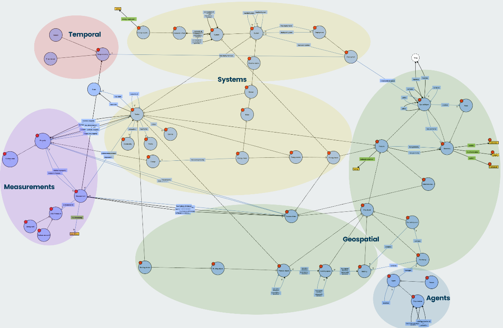
Figure 9. BIGG Ontology
The ontology is structured into five key components:
-
Systems: Describes technical systems (e.g., HVAC, sensors, weather stations) and their interrelations to support maintenance, operational efficiency, and integration across buildings and urban infrastructure.
-
Geospatial: Captures spatial and geographic characteristics of urban environments, supporting land use planning, site analysis, and environmental assessment.
-
Measurements: Standardizes the description of metering devices and sensors (e.g., thermostats, environmental monitors), ensuring consistent and accurate data collection across domains.
-
Agents: Identifies relevant stakeholders and actors across the building and urban lifecycle, fostering collaboration, accountability, and coordinated urban management.
-
Temporal: Integrates time-based dimensions (e.g., lifecycle phases, historical data) to enable longitudinal analyses, predictive maintenance, and evaluation of long-term impacts.
Relevance to CELINE
Beyond data integration, the BIGG Ontology provides a shared vocabulary and schema for describing, analysing, and benchmarking buildings and urban areas. This common language supports urban planning, building management, and sustainable development by improving information sharing among researchers, public authorities, and private actors. It also defines a framework for key performance indicators (KPIs), enabling consistent monitoring and comparison of urban and building performance.
BOnSAI (Smart Building Ontology for Ambient Intelligence)
BOnSAI [52], the Smart Building Ontology for Ambient Intelligence, was conceived to give ambient-intelligence (AmI) installations a common, machine-interpretable vocabulary that spans the whole life cycle of a smart-building service, from physical devices up to composite Web services. Its chief objective is to dissolve the semantic silos that normally separate building hardware, software services, user context and quality-of-service (QoS) concerns, so that reasoning engines and orchestration tools can discover, select and compose resources automatically. BOnSAI therefore complements domain-independent upper ontologies for Web services (e.g., OWL-S) with domain-specific concepts that are indispensable inside a building, such as rooms, environmental parameters, sensors, actuators, and occupant preferences, while still importing and aligning with existing AmI and context ontologies to maximise reuse and interoperability.
The ontology’s class hierarchy is organised around four tightly interlinked clusters.
-
Hardware-related classes distinguish Appliances (e.g., radiators, luminaires, HVAC units) from Devices that expose a programmable interface. Devices are further refined into Sensors, Actuators, SensorActuators, and networked Servers, each annotated with location, communication protocol, power state and, where relevant, average consumption figures, information that later supports energy-aware planning.
-
Functionality-related classes formalise what those devices (and the services wrapped around them) can do, capturing Parameters they observe or influence (temperature, luminance, CO₂, power, energy), Actions they perform, and the Facts or EnvironmentalConditions they bring about.
-
Service-related classes adapt OWL-S notions of Service, Profile, Process, and Grounding so that every smart-building capability can be published, discovered, and invoked through standard Web-service mechanisms.
-
Finally, Context-related classes model Location, Time, environmental snapshots and higher-level user attributes (profiles, roles or moods) that allow the same service to behave differently according to who is present, where and when. Complementing the four pillars is a lightweight QoS vocabulary (latency, throughput, energy cost) enabling optimisation during service selection. Altogether, BOnSAI claims broader coverage than earlier AmI ontologies such as GAIA, CoDAMoS, or DEHEMS, yet keeps the model deliberately compact so that implementers can grasp and extend it quickly.
The ontology was engineered in OWL following the “Ontology Development 101” methodology and validated at the International Hellenic University Smart-IHU living lab. In that deployment, hundreds of sensors, actuators, and smart plugs were instantiated as BOnSAI individuals, while composite HVAC and lighting services were semantically annotated and exposed via SAWSDL. Rule-based reasoners exploited the model to match user comfort targets with actionable device configurations, schedule tasks to minimise peak demand, and switch appliances dynamically when contextual conditions (occupancy, mood, daylight) changed. Because both devices and services share the same semantic backbone, AmI middleware could substitute a failed component transparently or merge data streams from heterogeneous vendors without manual mapping. Importantly for energy-centric scenarios, BOnSAI encodes each appliance’s effect relationship to environmental parameters and its nominal consumption, paving the way for fine-grained accounting and optimisation goals such as demand-response or carbon-aware operation.
Beyond the confines of a university campus, BOnSAI’s scope anticipates varied application domains: commercial office automation, residential home energy management, assisted-living facilities where context-aware services enhance comfort and safety, and even smart-city micro-grids that require coherent descriptions of distributed assets. Its grounding in service-orientation also makes it attractive for cloud-edge orchestration, where building resources are exposed as micro-services and combined with third-party data feeds (weather, pricing, mobility) to realise higher-level applications. Because the ontology is modular, specialised branches (e.g., for air-quality sensors, thermal-storage devices, or occupant well-being metrics) can be grafted in without breaking core reasoning patterns.
Relevance to CELINE
CELINE aims to create a cross-sector, data-driven digital ecosystem that empowers local energy communities through Digital Twins, AI assistants, and user-centric services. BOnSAI can supply the semantic layer for CELINE’s building-side assets, giving the Digital Twin a well-defined vocabulary to represent devices, environmental variables, user context, and service capabilities uniformly across Spanish, Finnish, and Italian demonstrators. By reusing BOnSAI’s patterns, CELINE ensures that heterogeneous building data flow into its wider energy-community ontology without tedious schema alignment, while the ontology’s explicit links between hardware, actions, and QoS naturally support CELINE’s objectives of optimised self-consumption, end-user empowerment, and data sovereignty. In short, BOnSAI offers CELINE a mature, extensible semantic foundation on which the project’s AI assistants can reason, plan, and communicate, accelerating deployment and strengthening interoperability throughout the community-energy value chain.
BRICK Schema
Brick Schema [53] is an open-source ontology that offers a uniform, machine-readable vocabulary for describing the assets, spaces, and data points inside buildings, together with the rich web of relationships that link them. Born out of the need to make building metadata portable across heterogeneous building-management systems, analytic platforms, and vendor toolchains, Brick’s core objective is to enable any application (ranging from energy dashboards to sophisticated AI services) to discover, query, and integrate building information without bespoke, site-specific engineering. To achieve this, Brick formalizes a common set of classes and properties in OWL/RDF and distributes them in versioned Turtle, JSON-LD, and RDF/XML files (the current stable line is 1.4.x). By providing a stable IRI structure and a rigorous versioning policy, Brick ensures both backward compatibility and ease of evolution, so that models created today remain consumable by the tools of tomorrow.
At the heart of Brick lie a handful of high-level classes that capture the semantics of building systems. Brick:Equipment represents the physical or logical devices that transform or convey energy (everything from air-handling units (AHUs) and variable-air-volume (VAV) boxes to photovoltaic inverters and battery packs) while Brick:Point (with subclasses Sensor, Setpoint, Command, Alarm, and Parameter) represents the measured, controlled, or computed data streams associated with that equipment. Brick:Location hierarchically captures spatial entities such as Site, Building, Floor, Room, and Zone; this spatial dimension is essential for spatial analytics, occupant services, and energy apportionment. Relationships such as brick:hasPoint, brick:isPartOf, brick:feeds, and brick:isLocatedIn weave these classes into expressive graphs that let applications traverse from, say, a CO₂ sensor in a meeting room to the rooftop AHU that conditions that air and then to the chiller plant that supplies chilled water to the AHU. In addition, Brick supplies a tag-based inheritance system so that a modeler can easily specialize equipment (e.g., HVAC/Zone/VAV) or points (e.g., Temperature_Sensor) without exploding the ontology; this balance of hierarchy and tags keeps models concise yet semantically precise.
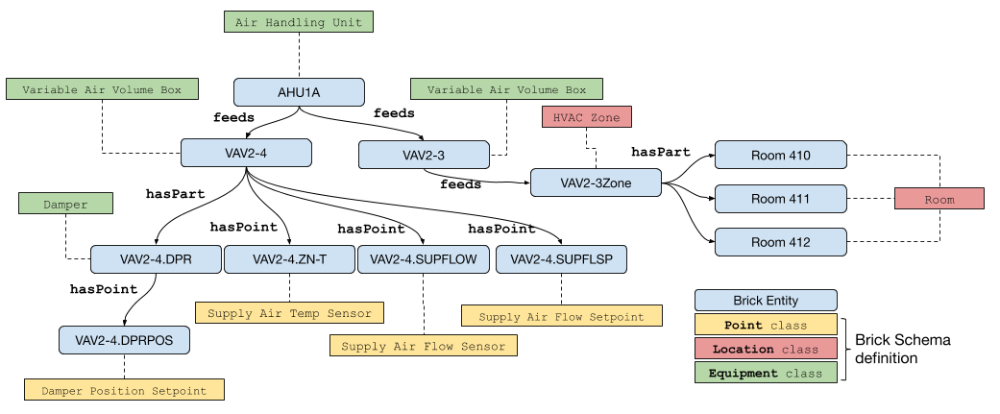
Figure 10: Overview of the Brick as “A Uniform Metadata Schema for Buildings” [53]
The clarity and portability that Brick affords have opened it to a broadening array of application domains. It underpins fault-detection and diagnostics engines, non-intrusive load monitoring, model-predictive control, demand-response orchestration, occupancy analytics, energy dashboards, and digital-twin platforms, as documented by both academic field studies and industrial deployments from corporations such as Johnson Controls. Because Brick explicitly captures the “graph” of a building (equipment topology, data points, and spatial context) analytics developers can deploy algorithms once and run them on any Brick-modelled site without bespoke rewiring, significantly reducing commissioning cost. More recently, Brick extensions have begun to model occupants and their behavioural patterns, further broadening its use for user-centric services and participatory feedback loops.
Relevance to CELINE
These characteristics make Brick directly relevant to the CELINE project’s ambition to create a cross-sector, community-oriented digital ecosystem for energy innovation. CELINE’s Digital Twin will need to federate granular data from buildings, distributed energy resources, and community infrastructures; adopting Brick as the canonical schema for building-side assets ensures that sensors, HVAC equipment, rooftop PV, and behind-the-meter batteries are exposed through a semantically consistent interface. This, in turn, can allow CELINE’s AI Assistant Tools to reason coherently about energy usage, indoor comfort, and demand-response potential across the three demonstrator regions without re-modelling each site. Brick’s extensible tag system also dovetails with SAREF (another ontology identified for CELINE) so that Brick instances can be aligned or mapped to SAREF’s higher-level abstractions (e.g., Device, FeatureOfInterest), thereby enabling seamless data exchange along the energy value chain while preserving data sovereignty. By grounding local community models in a well-adopted ontology, CELINE can accelerate the deployment of user-centric services, foster replicability in new EU regions, and cultivate an ecosystem where third-party innovators can plug analytics or control applications into any Brick-enabled site with minimal friction.
CIM (Common Information Model)
The Common Information Model (CIM) [54] is an open, standards-based ontology defined by the IEC 61970, 61968, and 62325 series to create a uniform digital language for describing all components and processes that make up modern electric-power systems, from high-voltage transmission assets to low-voltage customer equipment and even wholesale market transactions. Its main goal is to remove the semantic silos that have historically divided enterprise IT applications like asset management, planning, billing, and market systems from operational technologies (OT) like SCADA/EMS or DMS. CIM reduces integration costs and the risk of data misinterpretation by providing a common vocabulary for all systems, which is expressed formally in UML and typically exchanged through RDF/XML serializations. This allows vendors, grid operators, and third-party service providers to share models, measurements, forecasts, and event data without the need for time-consuming point-to-point mappings.
At the heart of CIM lies a layered class hierarchy that starts with a minimal but powerful IdentifiedObject superclass, which guarantees that every real-world artefact (whether it is a line, a breaker, or a price signal) possesses globally unique identifiers and human-readable names. From this root, the ontology branches into three foundational concepts. PowerSystemResource captures anything that participates directly in the flow, conversion, or control of electrical energy; typical specialisations include ConductingEquipment, EnergyConsumer, GeneratingUnit, and PowerElectronicsConnection. Equipment refines the description of tangible assets by adding operational attributes (e.g., rated voltage or insulation class) and structural ties to connectivity nodes and terminals, while Asset brings in finance- and maintenance-oriented properties such as manufacturer, serial number, and lifecycle state. Complementing these physical views are behavioural classes such as Control, RegulatingControl, and Measurement, which bind real-time telemetry and command points to their underlying devices and roles in the protection or optimisation logic. In distribution-oriented profiles, additional abstractions (ServiceDeliveryPoint, UsagePoint, Outage, or MeteringFunction) connect the grid model to customer premises, work-management systems, and energy-retail processes. For market applications, IEC 62325 extends the base core with MarketParticipant, MarketProduct, Bid, Schedule, and Settlement classes, allowing ISO/RTOs and aggregators to exchange bids, awards, and imbalance reports in a way that is semantically consistent with the network model.
CIM’s application domains are therefore deliberately broad. In the control-room environment, it serves as the canonical data model for state-estimation, contingency analysis, and network applications that need to ingest models from neighbouring TSOs or DSOs; the CIM CGMES profile, mandated across ENTSO-E members, exemplifies this use. In distribution management, the 61968 subset underpins outage-management systems, DERMS, and advanced planning tools that reconcile high-resolution feeder models with customer and asset data. On the enterprise side, the same ontology is used to feed predictive-maintenance analytics, condition-based asset-investment planning, and regulatory reporting. Wholesale and balancing markets adopt the 62325 packages to automate bid submission, award notification, and settlement, harmonising physical operations with financial flows. Because CIM profiles are exchanged either as full RDF graphs or incremental message payloads, they readily support modern data-platform patterns such as data lakes and micro-service APIs, while the UML basis lets vendors auto-generate code, databases, and documentation from a single source of truth.
Relevance to CELINE
These characteristics make CIM highly relevant to the CELINE project. CELINE’s vision is to build an open-source, cross-sector Digital Ecosystem and Toolbox centred on community energy systems, where end-users, local assets, and external sectors (mobility, buildings, markets) interact via a Digital Twin and AI assistants. To realise seamless data integration and to guarantee data sovereignty across heterogeneous stakeholders, CELINE can leverage CIM as the semantic backbone for all electricity-related aspects of that ecosystem. By mapping the Digital Twin’s artefacts (solar inverters, residential batteries, electric-vehicle chargers, and community-level market products) to CIM’s standard classes, CELINE ensures that each demonstrator in Valencia, Lappeenranta, and Alpe Cimbra speaks a language already understood by transmission operators, DSOs, energy retailers, and many commercial software platforms. Because CIM is extensible, CELINE can add locality-specific or cross-sector attributes (e.g., comfort metrics, mobility patterns) without breaking interoperability. Equally important, adopting CIM alongside SAREF allows CELINE to bridge device-level semantics (handled elegantly by SAREF) and system-level grid or market semantics (captured comprehensively by CIM), resulting in an end-to-end information model that spans IoT sensors, household prosumers, community aggregators, and national markets. This harmonised ontology landscape simplifies the development of the AI assistant tools, reduces integration effort in each pilot, and strengthens the project’s replicability across Europe by aligning with de facto industry standards.
CityGML
CityGML (City Geography Markup Language) [55] is an open, standardized data model and exchange format designed to store and represent 3D city models in digital format. The format is defined by the Open Geospatial Consortium (OGC) and allows for the detailed modelling of urban environments, including buildings, infrastructure, vegetation, and terrain. CityGML supports both the representation of 3D objects and their semantic relationships, making it a powerful tool for urban planning, spatial analysis, and environmental simulations.
Relevance to CELINE
For CELINE, CityGML can be relevant for creating detailed digital twins of community energy systems. It enables the integration of spatial data with energy-related data, helping to visualize how energy infrastructure fits within its geographical context. In practice, this could support efforts to model and analyse decentralized energy production and consumption in urban and rural environments, such as in CELINE's demonstrators (e.g., Valencia, Lappeenranta, Alpe Cimbra). By leveraging CityGML's open standards, CELINE can ensure that its digital ecosystem and toolbox offer interoperable solutions for managing energy data alongside urban planning and other relevant factors.
CityGML Energy ADE
The CityGML Energy ADE (Application Domain Extension) [56] extends the CityGML standard to include features specifically designed for energy simulation. It enables the integration of energy-related data, such as energy consumption, building performance, heating/cooling demands, and solar radiation, into the 3D city models. This extension provides the necessary properties and structures to store and process energy simulation results, supporting more accurate and dynamic analysis of energy flows in urban environments.
Relevance to CELINE
Energy ADE allows the CELINE project to incorporate energy data into its digital twin of community energy systems. This integration supports the simulation of decentralized energy production and consumption, helping to optimize energy use and enhance efficiency. By using the Energy ADE, CELINE can create a detailed, data-driven environment that empowers end-users and communities to better manage their energy resources, aligning with the project’s goals of facilitating self-consumption schemes and improving energy literacy.
CityGML UtilityNetworkADE
The CityGML UtilityNetworkADE (Application Domain Extension) [57] extends the CityGML model to represent utility networks in a more structured way, enabling sophisticated topological analyses and simulations of utility infrastructures such as electricity, water, gas, and heating networks. This extension facilitates the representation of networks in a detailed, standardized manner, allowing for the modelling of nodes, edges, and the relationships between various components of utility systems.
Relevance to CELINE
In the context of CELINE, it can enhance the data-driven ecosystem by providing the necessary tools to model, simulate, and optimize utility networks within community energy systems. By incorporating this extension, CELINE's digital twin of community energy systems can include precise representations of utility networks, enabling better planning and management of energy and infrastructure. This capability can be especially valuable in CELINE’s demonstrators, where diverse geographical and infrastructural settings require tailored energy solutions. The integration of UtilityNetworkADE ensures that energy systems and their underlying utility networks can be analysed holistically, promoting efficient, resilient, and sustainable energy solutions.
Common Grid Model Exchange (CGMES)
The Common Grid Model Exchange Specification (CGMES) [106] is a specialised profile of the IEC Common Information Model that Europe’s transmission-system operators use to exchange detailed network models for regional or pan-European studies and real-time operations. Conceived within ENTSO-E’s CIM working group and published as IEC TS 61970-600-1/-2, CGMES packages the CIM classes most relevant to high-voltage transmission equipment, topology, steady-state hypotheses and state variables into interoperable XML/RDF documents. By fixing naming rules, mandatory attributes and validation artefacts, CGMES allows independent software from different vendors to build, merge and simulate individual grid models (IGMs) that are later aggregated into the pan-European Common Grid Model. The specification appeared in 2013, evolved through versions 2.4.15 and 2.5, and reached version 3.0 in 2021, each revision closing modelling gaps and refining conformance rules. Today, it underpins capacity-allocation, congestion-management, and dynamic-security processes mandated by European network codes [103].
CGMES builds upon four cornerstone profiles. The Equipment (EQ) profile contains static descriptions of physical assets, lines, transformers, switches, and generating units, while the Topology (TP) profile identifies which terminals are electrically connected in each state. The Steady-State Hypothesis (SSH) profile supplies loading, generation, and control-set-point data required for a power-flow snapshot, and the State Variable (SV) profile carries the calculated voltages, angles, and branch flows that result from a load-flow study. Optional profiles add dynamics, diagram layouts, and geographic information. Each profile is stored in its own RDF/XML file and linked by globally unique mRIDs, enabling TSOs to exchange only the data sets they need for a given business process. CGMES prescribes SHACL shapes for machine validation, guarantees backward compatibility through versioned namespaces, and supports secure Web-transport delivery or classical file transfer according to operator policy [106].
Figure 11 (left) places the CGMES profiles in context. At the bottom, the TSO equipment model enumerates substations, lines, transformers and protection devices; in the middle, the TSO topology layer resolves which terminals are energised; and at the top, the state-variable layer feeds calculated voltages and power flows back into security-analysis applications. A validation pipeline such as the one sketched in Figure 11 (right) converts the authoritative UML into an RDF schema, generates profile-specific code in C++, Python or JavaScript and produces deserialisers that load the XML files into study tools; this toolchain makes vendor implementations consistent and testable. Because each profile is independent, operators can exchange only EQ and TP for capacity calculation, or add SSH and SV to support contingency analysis, limiting bandwidth and safeguarding confidential data.
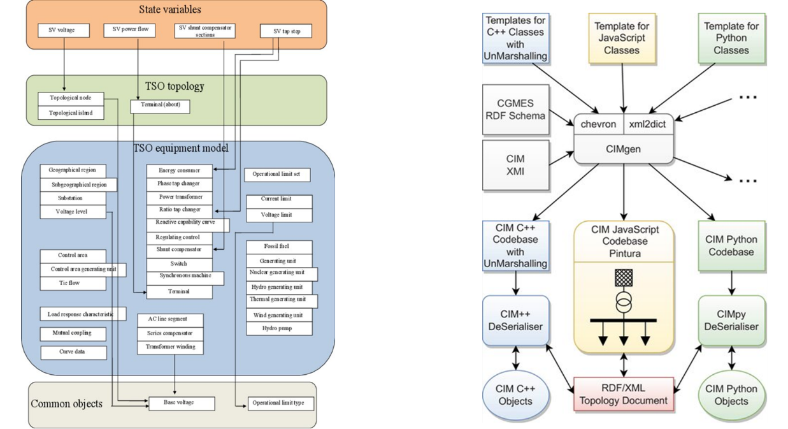
Figure 11: (Left) CGMES profiles, (right) code generation.
Version 2.4.15, approved in 2014, established the core four-file exchange and was first used in ENTSO-E’s daily day-ahead contingency-analysis process. Version 2.5 (2018) added metadata packages for change-sets and model manifests, strengthened operational-limit modelling and aligned with CIM 16, while extensive interoperability tests in 2016 validated the extensions. Version 3.0 (2021) completed the migration to CIM 17, introduced SHACL-based validation rules, clarified HVDC and power-electronics modelling and corrected legacy inconsistencies; conformity-assessment scheme 3.0.2, released in 2024, now governs vendor attestation. A roadmap published by ENTSO-E in October 2024 foresees incremental “network-code profiles” that capture capacity-calculation and dynamic-security use cases without breaking backward compatibility [104].
CGMES is the mandatory exchange format for the European Common Grid Model used in the Ten-Year Network Development Plan (TYNDP) and in the Coordinated Security Analysis run by Regional Coordination Centres. TSOs in Scandinavia, Central Europe and the Iberian Peninsula already generate hourly CGMES snapshots that feed into capacity-calculation modules, and vendors such as DIgSILENT, Siemens PTI and IPSA have obtained CGMES 3.0 conformity for their network-study suites. Open-source libraries including PowsyBl and CIMpy provide validation and conversion services, lowering the barrier for academic and start-up participation. Current work streams focus on extending the specification to cover transmission-distribution data exchange, embedding probabilistic forecasts and enhancing cybersecurity through semantic signing of RDF instance data.
Relevance to CELINE
With regulatory pressure for ever-faster capacity calculations and pan-European dynamic-security assessment, CGMES continues to mature as the de-facto lingua franca for high-fidelity grid-model interchange [105].
DABGEO
DABGEO [61], [110]-[111] is a modular, multilayered, and interoperable ontology that offers a cohesive semantic framework for integrating and managing energy data across diverse smart grid and energy management scenarios. It facilitates semantic interoperability between systems at different levels, from household devices to city-wide infrastructures. DABGEO organizes data across five essential energy domains: Energy Equipment, Infrastructure, Energy Performance, External Factors, and Smart Grid Stakeholders [110].
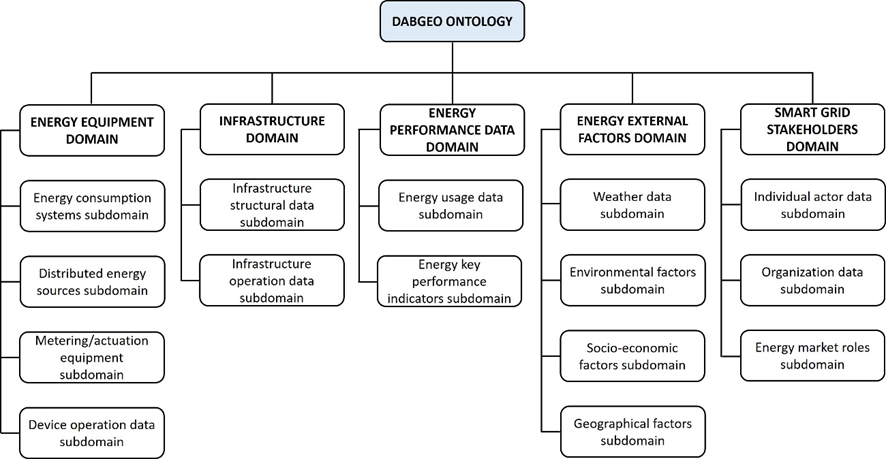
Figure 12: Overview of the DABGEO ontology [111]
These five domains, as shown in Figure 12 act as bridges connecting CELINE's objectives to the DABGEO Ontology. Each domain reflects a thematic area that is essential for intelligent energy systems [111]:
-
Energy Equipment Domain: This encompasses IoT devices such as HVAC systems, PVs, and batteries, which are central to CELINE’s smart device integration.
-
Infrastructure Domain: Represents buildings, grids, and physical environments, supporting CELINE's decentralization and smart city goals.
-
Energy Performance Data Domain: Involves KPIs and usage data, enabling CELINE’s monitoring, optimization, and decarbonization strategies.
-
Energy External Factors Domain:Includes weather, environmental, and socio-economic data that help CELINE incorporate renewables and adapt to external influences.
-
Smart Grid Stakeholders Domain:It encompasses diverse users, organizations, and market roles, all of which embody CELINE's commitment to empowering consumers and fostering seamless market integration. This holistic approach enhances consumer experience and strengthens the connections between market participants.
Relevance to CELINE
-
Digitalization & IoT Integration: DABGEO provides detailed information on smart, IoT-enabled energy devices, including smart appliances, electric vehicles, photovoltaic (PV) panels, heat pumps, and metering or actuation equipment. This information directly assists CELINE in implementing connected digital assets and developing digital twins for energy systems.
-
Smart & Decentralized Infrastructure: By modelling structural and operational data for homes, microgrids, and cities, DABGEO provides the necessary semantic foundation to manage smart buildings, enable edge-cloud computing, and support decentralized energy systems, as envisioned by CELINE.
-
Energy Monitoring & Decarbonization: DABGEO tracks performance metrics such as energy use, storage, production, and key performance indicators (KPIs) like energy cost and renewable share. This facilitates monitoring, optimizing, and decarbonizing energy systems in line with CELINE’s commitment to emission reduction and flexibility.
-
Climate & Environmental Responsiveness: DABGEO leverages a comprehensive approach encompassing weather patterns, environmental factors, and socio-economic subdomains to provide context-aware analytics. This innovative framework is designed to facilitate climate-sensitive planning and enhance the integration of renewable energy sources, aligning seamlessly with CELINE's ambitious goals for environmental sustainability. By synthesizing diverse data streams, DABGEO empowers decision-makers to make informed choices that promote ecological balance and resilience in the face of climate change.
-
Stakeholder Empowerment & Market Access: DABGEO intricately models the diverse individual and organizational energy actors along with their distinct roles within the market, encompassing categories such as consumers, prosumers, and Distribution System Operators (DSOs). This comprehensive approach not only aligns with CELINE’s overarching objective of empowering consumers to engage actively in the energy landscape but also champions the principles of data sovereignty and market transparency. By creating a more participatory environment, DABGEO enhances the dynamics of energy production and consumption, ensuring that all stakeholders have a voice and access to vital information.
-
Interoperable European Data Infrastructure: DABGEO serves as a semantic backbone for data interoperability across Europe, enabling meaningful integration, querying, and reuse of energy data from various sources and tools, including CELINE’s cross-sector data connectors and AI assistants.
-
Architecture: DABGEO comprises 97 ontology modules organized into three levels of abstraction, spanning from core, domain-independent knowledge to application-specific modules. This modularity enables developers to create application ontologies tailored to Smart Grid contexts, such as CELINE household toolboxes, community toolboxes, and digital marketplaces.
-
Function: By ensuring semantic consistency and machine-readable data exchange across energy ecosystems, DABGEO empowers innovative energy management applications, such as those in the CELINE ecosystem, with capabilities for data interoperability, contextual understanding, and scalable integration.
DECENT
DECENT [112], an ontology for decentralized governance in the renewable energy sector, is an ontology that puts words and structure around how power-sector actors govern a fully decentralised, peer-to-peer energy world. It pulls its terms from more than 80 governance and energy papers and is aimed at people who design energy-business ecosystems as well as researchers who need a clean vocabulary for “who sets the rules, who follows them, and how decisions get made” in renewables settings.
In [112] the DECENT ontology adopts two ideas from the literature. First, an ecosystem is any set of firms or people that compete and co-operate to meet a customer need. Second, decentralised governance means the rules of that ecosystem are created and enforced by several of its members rather than by a single central authority. Although the first release targets renewable-energy communities, solar, wind, and small hydro, it uses generic terms so the same framework can later serve other domains such as fintech or digital media.
The schema is deliberately lightweight. Everything centres on the class Party, which covers both single Actors and multi-member Groups. Any Party may take a Role defined, execute, or monitor a Governance Construct. Governance constructs include Rules and Rule Sets (further refined as Legislation or Regulation), Goals and measurable Objectives, Policies that realise rule sets, Mechanisms that carry out those policies, and Incentives split into Rewards and Penalties that influence behaviour. A separate Decision-Making element records whether agreement is reached by direct vote, delegation or hierarchy, keeping the route to any rule change explicit.
DECENT is human-readable first and machine-readable second. It is published as a UML class diagram with clear cardinalities, yet every class carries a representation slot, so LegalRuleML or Symboleo files can encode Rules, OWL classes can annotate Parties, BPMN models can describe Mechanisms, and voting ontologies can attach to Decision-Making letting tool builders add compliance checks or on-chain voting without bloating the core.
The ontology was created in three stages: drafting plain-language requirements for non-technical stakeholders; reviewing more than 150 papers and retaining 80 that focus on decentralised governance in renewable energy; and distilling the key terms into a concise UML model, deleting any that did not add diagnostic value. The resulting reference ontology is small enough to teach in a single session yet rich enough to anchor more formal machine-processable versions.
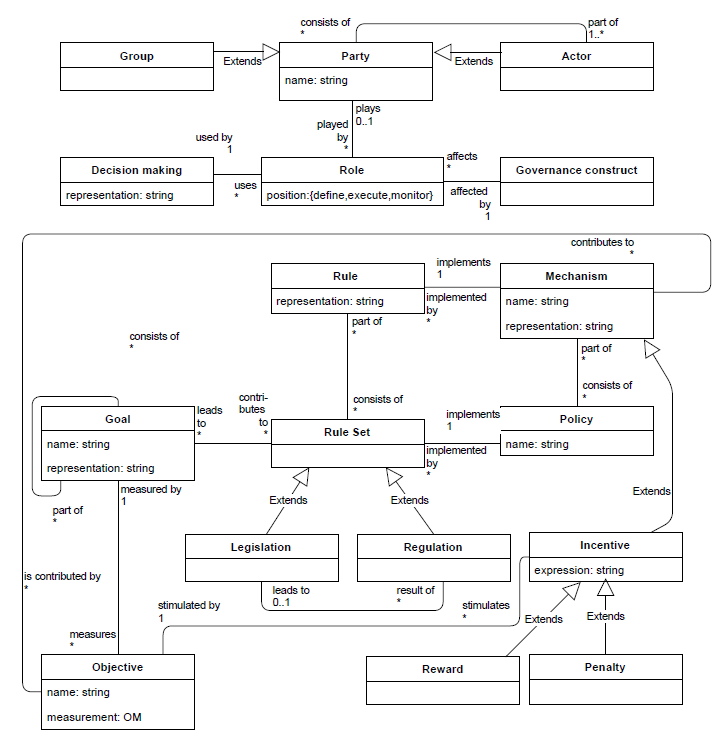
Figure 13: Overview of the ontology.
Relevance to CELINE
A Dutch peer-to-peer solar-trading case validated the model: EU climate-neutral goals map to Goals, national emission maps to Objectives, new Dutch law maps to Legislation, local energy-community by-laws map to Regulation, PV production forecasts map to Mechanisms, and TSO imbalance charges map to Penalties. Every governance element fits cleanly, showing that DECENT can both describe current decentralised markets and guide the design of future ones.
DLMS/COSEM (IEC 62056)
The DLMS/COSEM standard [63], encapsulated within the IEC 62056 series, stands as a pivotal framework for smart metering systems across electricity, gas, water, and heat utilities. It ensures interoperability among diverse devices and manufacturers by defining a unified data model and communication protocols. This standard facilitates seamless data exchange, remote configuration, and management of metering devices, thereby supporting efficient energy monitoring and control.
At the heart of DLMS/COSEM lies the COSEM (Companion Specification for Energy Metering) object model, which adopts an object-oriented approach to represent metering data and functionalities. Each COSEM object is an instance of an Interface Class (IC), characterized by specific attributes (data points) and methods (operations). For instance, a register IC may have attributes like current value and unit, and methods to reset or freeze the register. This modular structure allows for scalable and flexible representation of complex metering functions. Figure 14 illustrates the COSEM Interface class, instance example, and the OBIS coding system.
To uniquely identify each data item within a meter, DLMS/COSEM employs the OBIS (Object Identification System) codes. An OBIS code is a hierarchical identifier comprising six groups (A to F), each representing a specific aspect of the data, such as the energy type, measurement channel, or tariff period. This standardized coding ensures consistent interpretation of data across different systems and devices and forms a core part of the COSEM model architecture shown in Figure 14.
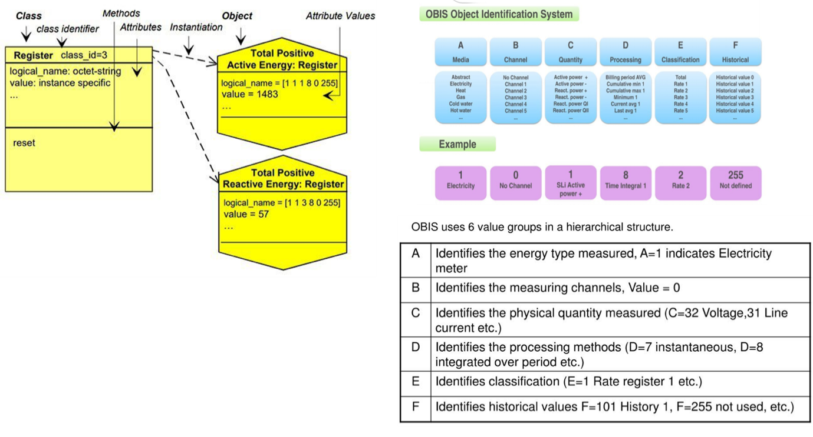
Figure 14: COSEM Interface class, instance example, and the OBIS coding system
The communication architecture of DLMS/COSEM is layered, closely mirroring the OSI model. At the top, the Application Layer hosts the COSEM object model and exposes services such as GET, SET, and ACTION. Beneath it, the Transport and Network Layers deliver reliable carriage over wrapper-encapsulated TCP, UDP, or HDLC, giving implementers freedom to select the medium that best suits a deployment. The Datalink and Physical Layers then frame and transmit information across power-line carriers, GSM, RF, Ethernet, or other bearers. This modular stack guarantees that smart-metering devices from different vendors can interoperate while remaining adaptable to new communication technologies, as the left panel of Figure 15 illustrates. The right panel of Figure 15 complements this static view by walking through a full client-server session from AARQ/AARE connection establishment under increasing security levels, through measurement-service exchanges, to connection release showing how the layered architecture operates in practice.
Security is integral to DLMS/COSEM, incorporating multiple authentication levels, including Low-Level Security (LLS) and High-Level Security (HLS), to verify the identity of communicating entities. It also supports encryption to maintain data confidentiality and access control mechanisms to prevent unauthorized access to meter data and functions. These features are crucial for safeguarding sensitive metering information and ensuring trust in metering infrastructure.
Relevance to CELINE
DLMS/COSEM finds extensive application in smart metering infrastructures, enabling remote reading and management of utility meters. It supports demand response programs by facilitating real-time monitoring and control of energy consumption, aiding in balancing demand and supply. Additionally, it integrates with energy management systems to analyze consumption patterns and optimize energy usage. The standard also accommodates complex billing structures and time-of-use tariffs, enhancing billing accuracy and customer engagement [113]-[116].
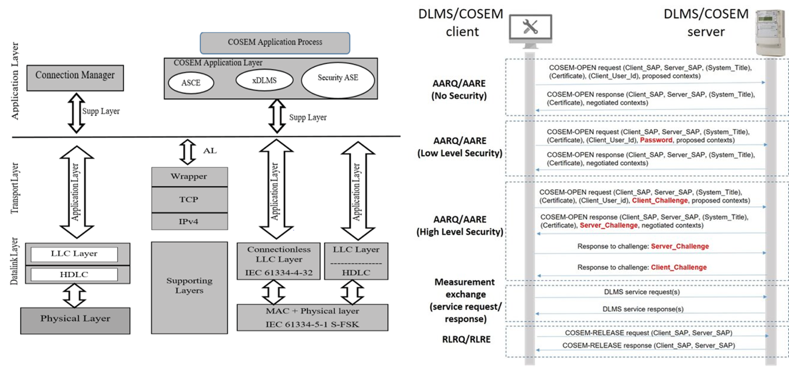
Figure 15: Process flow overview.
EFOnt (Energy Flexibility Ontology)
The Energy Flexibility Ontology (EFOnt) [64] was created to fill a persistent semantic gap in the emerging field of grid-interactive, energy-flexible buildings. Whereas numerous data schemas already exist for building information modelling, sensing, metering, or demand-response messaging, none of them provide a unified vocabulary for describing what energy-flexible resources are available in a building, how they behave, and how their value can be quantified. EFOnt therefore sets out two high-level goals: (i) to supply researchers, technology vendors, and grid operators with a common language that avoids the redundancy and ambiguity now found in the literature, and (ii) to underpin analytics, simulation and control applications that must interoperate across heterogeneous software stacks and physical assets. Developed in OWL/Turtle and released as open-source, the ontology builds directly on web standards so that it can be reasoned over with off-the-shelf semantic-web tools and easily aligned with complementary ontologies such as Brick (see page 80), SAREF, or IFC-OWL.
EFOnt organises its knowledge model into six tightly coupled modules. Application Scope classes let users articulate the level at which they are working (device, system, building, community, or sector) because the meaning of “flexibility” and the relevant metrics change with scale. Performance Goal classes formalise why flexibility is sought, capturing objectives such as peak-load reduction, cost minimisation, carbon-emission mitigation or resilience improvement. Building Service classes link flexible operations to the services they may affect (for example, indoor thermal comfort or air-quality targets), ensuring that flexibility is never evaluated in isolation from occupant needs. Flexibility Resource classes provide the heart of the ontology, enumerating the technologies or operational strategies (ranging from light-dimming and set-point shifting to battery discharging and electric-vehicle smart-charging) that enable demand-side modulation. Flexible Load Characteristic classes encode the temporal and magnitude attributes of a load-shaping action (ramp rates, duration, rebound effect, and so on), while EF KPI classes store the equations, data requirements, and stakeholder relevance of key performance indicators used to measure success. This modular structure keeps the ontology extensible: new resources or KPIs can be added without disturbing existing axioms, and domain experts can recombine modules to suit very different study scopes.
The Application Scope branch merits special attention because it ensures that results derived from EFOnt are not misapplied at the wrong scale. It distinguishes device-level use cases (e.g., smart thermostats) from system-level scenarios (e.g., HVAC plants), whole-building studies, neighbourhood or campus aggregation, and cross-grid sector analyses. Each scope inherits only the classes, properties, and KPIs that make sense for that level, thereby reducing model complexity and avoiding category errors.
Within the Flexibility Resource branch, EFOnt defines five principal subclasses: Behavioural Load Shaping for occupant-driven actions like window opening; Power-Adjustable Systems for devices whose output can be throttled or modulated; Schedulable Appliances for loads that can be time-shifted; Thermally-Activated Building Systems for envelope-based storage such as precooling; and Distributed Energy Resources for behind-the-meter generation and storage, further broken down into active storage, thermal storage, dispatchable and non-dispatchable generators. This fine-grained hierarchy allows researchers to tag resources consistently, compare their technical parameters, and map them onto objects in simulation tools like EnergyPlus, an explicit design requirement built into the ontology.
The Performance Goal and EF KPI modules transform semantic descriptions into actionable numbers. Goals are linked to stakeholders (occupants, DSOs, aggregators, policymakers) so that trade-offs become explicit, while KPI classes store not only the metric name and units but also the formula, required data streams, temporal resolution, and benchmark values. Because the KPI objects are formalised, automated reasoning engines or analytics platforms can generate queries that retrieve only the data needed to compute a chosen metric at the correct resolution, dramatically shortening the model-to-insight pipeline.
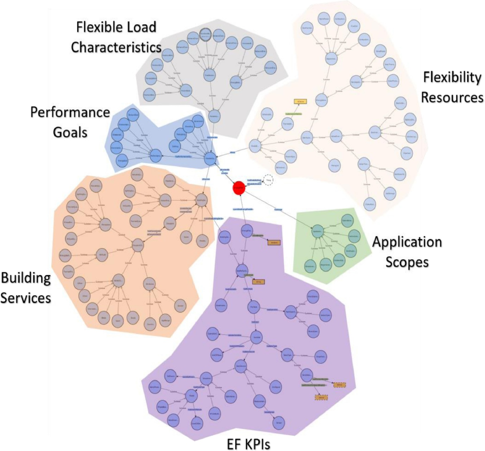
Figure 16: Overview of the main categories of the ontology [64].
EFOnt is already being applied in three broad domains. First, measurement-based analytics leverage the ontology to annotate time-series datasets (e.g., smart-thermostat logs) so that flexibility factors can be calculated consistently across studies. Second, simulation workflows use EFOnt’s mapping tables to configure scenario runs that test different flexible-resource portfolios in virtual buildings. Third, advanced control strategies exploit the ontology as a knowledge base that feeds optimisation routines or rule engines with semantically labelled device capabilities and constraints. Demonstrations published by the developers show both residential and commercial case studies, underscoring the ontology’s versatility.
Relevance to CELINE
In the context of the CELINE project, EFOnt offers an immediate semantic backbone. CELINE’s Digital Twin can import EFOnt classes to describe local flexible assets, while the AI Assistant can query EF KPI objects to explain to users how their actions translate into quantified benefits such as cost savings or carbon reductions. Because EFOnt is compatible with existing ontologies used in smart-home and smart-grid platforms, it also eases the integration of CELINE’s three geographically diverse demonstrators into a single, interoperable knowledge graph, supporting the project’s emphasis on data sovereignty, replicability, and open-source tooling. In short, adopting EFOnt would allow CELINE to ground its novel community services in a rigorously defined, widely reusable semantic model, accelerating deployment and increasing trust among stakeholders who must share data and algorithms across organisational and national borders.
Electricity Markets Ontology (EMO)
The Electricity Markets Ontology (EMO) [65] defines key abstract concepts and axioms relevant to existing electricity markets. Designed to be highly inclusive, EMO can be extended and reused to develop market-specific ontologies such as MIBEL, EPEX, Nord Pool, and others. EMO serves as the foundational ontology for all subsequent market ontologies developed in this scope. It is also the ontology to extend when creating new market definitions, such as GME (the Italian electricity market), potentially to be incorporated into MASCEM or other electricity market simulators. Figure 17 illustrates the key concepts and their relationships within EMO.
The EMO provides a formalized representation of knowledge in electricity markets, defining entities such as market participants, products, services, and the processes that govern electricity trading. This structured, machine-readable vocabulary enables better integration between market systems, supporting transparency and advanced analytics in the electricity trading sector.
EMO’s significance lies in its role as a market-centric ontology, crucial for efforts related to electricity trading, market data integration, and automation. By standardizing the representation of key market concepts, EMO facilitates interoperability among various stakeholders, including energy providers, regulators, consumers, and service developers.
Relevance to CELINE
The ontology supports the modelling of complex market dynamics, enabling efficient processing of large-scale trading data. Additionally, it can be integrated with other ontologies related to grid management, energy devices, or cross-sector applications, making it a vital tool for smart grid systems, market analysis, and the development of automated trading systems.
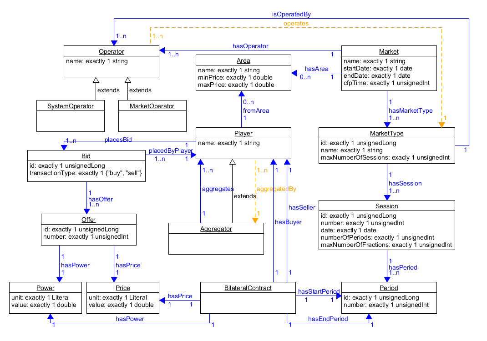
Figure 17. Electricity Markets Ontology
EM-KPI
The EM-KPI (Energy Management KPI Ontology) [66] ontology was designed to support energy management (EM) at district and building levels. It has a strong focus on key performance indicators (KPIs) and master data integration across domains. It facilitates the exchange of multi-level performance information among various stakeholders and enables cross-domain data processing to improve performance.
The ontology consists of two parts. The KPI part describes KPIs, including definitions, performance goals, stakeholders, calculation formulas, evaluated objects, and required data sources. The EM master data part captures contextual data from various domains such as energy, buildings, weather, occupancy, etc., to support KPI calculations and decision-making.
As depicted in Figure 18, the ontology consists of multiple modules. On the left the KPI part of the ontology is shown while all other modules are related to the EM part of the ontology. EM-KPI uses the NeON ontology engineering methodology for modularity and reuse. It reuses elements from multiple different ontologies, like the common information model.
Relevance to CELINE
The EM KPI ontology addresses data interoperability challenges across domains and stakeholders and enables a common vocabulary and structure for exchanging and integrating data from diverse sources.
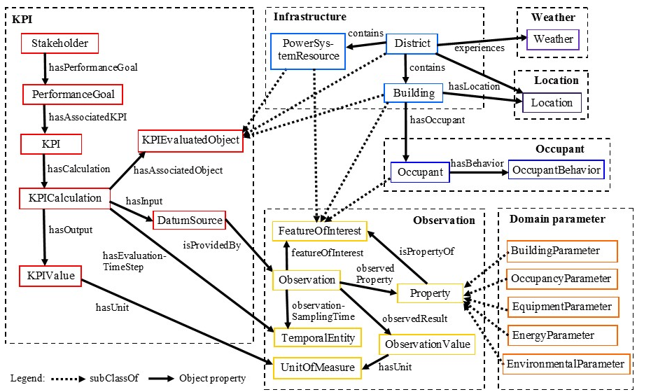
Figure 18: Model of the EM-KPI ontology.
Energy Grid Ontology for Digital Twins
The Energy Grid Ontology for Digital Twins [162] is an open-source, Digital Twins Definition Language (DTDL) model created by Microsoft and several European utilities to give energy-sector developers an “off-the-shelf” semantic backbone for grid-related digital-twin applications. Grounded in the IEC Common Information Model (CIM), the ontology captures the properties, telemetry, and inter-relationships of physical and logical grid assets so that data produced at any layer of the power system can be exchanged, analysed, and visualised uniformly. Its principal objective is to shorten the time-to-value for use-cases such as asset health monitoring, outage and impact analysis, network simulation, and predictive maintenance, while providing an extensible reference that partners can tailor to their deployments.
Structurally, the ontology is organised into CIM-derived “packages.” The Core package introduces the top-level abstractions (PowerSystemResource, ConductingEquipment and EquipmentContainer) that every other package builds on. The Wire package specialises those abstractions for transmission and distribution networks, modelling entities such as ACLineSegment, Breaker, BusbarSection, Transformer, Substation and their electrical characteristics (e.g., impedance, nominalVoltage). The Generation package brings in classes such as HydroGeneratingUnit, ThermalGeneratingUnit, WindTurbine, Generator and scheduling constructs used for unit commitment and economic dispatch. Finally, a Prosumer slice combines elements from the CIM Metering, Customer and DER namespaces (e.g., UsagePoint, EquivalentLoad, PVUnit, and MeterReading) so that consumer-side and distributed-energy resources can be represented in the same graph as utility-scale assets. Each class carries standard CIM relationships (e.g., partOf, connectsTo, locatedAt) and telemetry schemas, allowing developers to populate an Azure Digital Twins instance with richly linked “live” objects.
Because these packages are delivered as vanilla DTDL JSON files, they can be imported directly into Azure Digital Twins Explorer or validated with the DTDL Validator. Once deployed, twin graphs can ingest telemetry from SCADA, IoT sensors, market APIs, or simulation engines, and the ontology ensures that all data, whether real-time currents or forecast prices, resolves to a coherent, queryable model. This uniformity is crucial for cross-department collaboration: planning engineers, control-room operators, and data scientists can all point their tools at the same semantic layer, lowering integration overhead and reducing the risk of misaligned data interpretations. Application domains already demonstrated include live topology visualisation with power-flow overlays, automated voltage-violation detection, DER hosting-capacity studies, scenario-based resilience planning, and customer-side analytics such as behind-the-meter PV forecasting. Partners such as Agder Energi, Statnett, and Siemens have publicly reported using the ontology to speed the creation of grid-aware dashboards and AI pipelines, confirming its value as a de facto standard for utility digital twins.
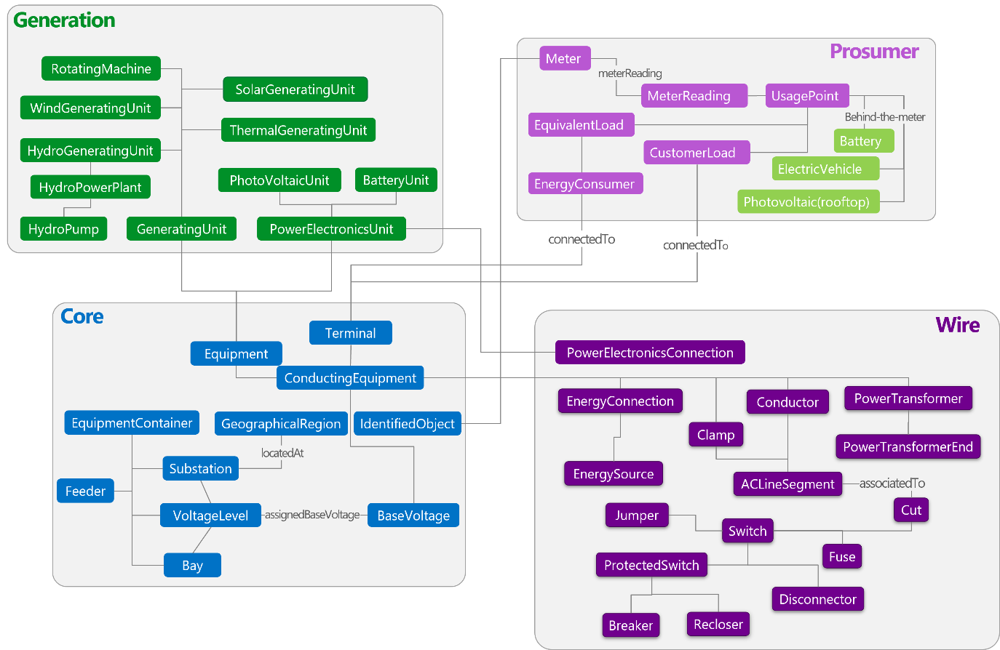
Figure 19: Overview of the Energy Grid Ontology for Digital Twins [162].
Relevance to CELINE
For the CELINE project, whose ambition is to co-design a cross-sector digital ecosystem with a community-energy digital twin at its core, the Energy Grid Ontology offers an immediately compatible schema for modelling both utility-scale and community-scale assets. By layering CELINE’s AI assistants and user-centric services on top of this ontology, project partners can guarantee that device telemetry (smart meters, EV chargers, community batteries), market signals, and environmental data share a common vocabulary with upstream grid data. This semantic alignment simplifies data integration, upholds the project’s data-sovereignty goals, and accelerates the roll-out of CELINE’s localised energy-management tools across its three demonstrators (Valencia, Lappeenranta and Alpe Cimbra) while still allowing bespoke extensions for regional specifics. In short, adopting the Energy Grid Ontology would let CELINE plug its community digital twins into the broader European grid-modernisation ecosystem, ensuring interoperability, scalability and smoother replication beyond the project’s lifetime.
HADGO (Hybrid AC/DC Grid Ontology)
The Hybrid AC/DC Grid Ontology (HADGO) [163] was conceived within the H2020 HYPERRIDE project to provide a semantic backbone for modelling, analysing and operating electrical networks that mix alternating-current and direct-current technologies. Its chief objective is to overcome the “data-stovepipe” problem that arises when grid components, digital platforms and analytics tools are described with incompatible vocabularies. By offering a technology-agnostic, OWL-DL knowledge model that captures both the physical assets and the electrical states of hybrid grids, HADGO enables automated reasoning for tasks such as power-flow calculation, cascading-effect assessment, cybersecurity diagnostics and critical-equipment identification. The ontology follows the principles of ontological realism and single inheritance to maximise conceptual clarity and reusability; approximately fifty asserted classes, organised under one root, are expressed through 186 axioms (116 logical) that were validated with the HermiT reasoner, yielding a consistently satisfiable model.
At the top layer, eight classes structure the core semantics. hadgo:PowerGrid acts as the umbrella entity for AC, DC or hybrid networks and mediates most relations with subordinate concepts. hadgo:Component represents any grid element and bifurcates into AC and DC branches; each branch is further specialised by the functional role it plays (generation, storage, consumption or transmission) through the hadgo:FunctionType hierarchy. The physical nature of components is refined by hadgo:ComponentType, which distinguishes atomic devices (e.g., lines, buses) from composite devices such as converters and transformers. Grid-wide electrical conditions are captured with hadgo:GridStateType, whose dynamic subclasses (hadgo:Voltage, hadgo:Power) and static subclass (hadgo:Impedance) allow each component instance to hold measurable states. hadgo:PowerFlowType encodes whether a component carries AC or DC current, directly affecting admissible connectivity, while hadgo:VoltageLevel (high, medium, low) records the operating voltage band. Finally, hadgo:UnitOfGridStateMeasure enumerates the permissible units for every state value, ensuring quantitative data is semantically grounded. All classes are interconnected with functional and inverse object properties that make the model richly navigable for automated queries.
Application-wise, HADGO is already embedded in the FIWARE-based sensing and monitoring layer of HYPERRIDE. There, it harmonises data arriving via MQTT brokers, Orion Context Broker and QuantumLeap before storage in CrateDB, enabling Grafana dashboards to visualise real-time hybrid-grid metrics with full semantic traceability. A prototype “switchgear” scenario demonstrated how device instances expressed in HADGO can be provisioned automatically, reasoned over for logical consistency, and used as anchor terms for further ontology alignment and analytics workflows. Because the ontology explicitly references SAREF concepts, it can interoperate with broader IoT and smart-building ecosystems, facilitating cross-domain data exchange.
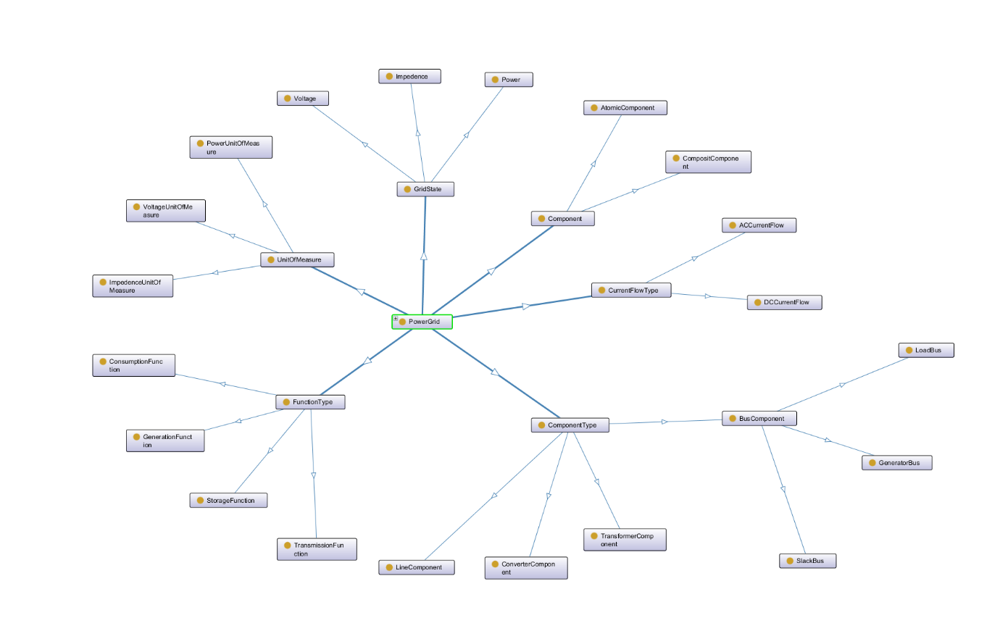
Figure 20: Core classes and their relationships in HADGO [163].
Relevance to CELINE
The CELINE project shares many of these requirements. CELINE seeks to create an open, cross-sector digital ecosystem (complete with community-scale digital twins and AI assistants) to help citizens optimise self-consumption, manage resources and make informed energy decisions across Spain, Finland and Italy. Leveraging HADGO within CELINE would provide a ready-made semantic scaffold for the electrical layer of those digital twins, ensuring that AC, DC and hybrid assets, their operational states and their interactions with community-level renewable generation are modelled consistently across demonstrators. Because HADGO is already aligned to SAREF and validated for FIWARE contexts, it fits naturally with CELINE’s plan to integrate heterogeneous data sources while preserving data sovereignty: sensor feeds, market transactions, demand-response events and user actions can be semantically unified without reinventing a vocabulary. Moreover, HADGO’s support for reasoning over power-flow, cascading failures, and cybersecurity can enrich CELINE’s AI assistant toolbox, enabling proactive alerts and optimisation advice that considers both technical grid constraints and user-centric objectives. Adopting or extending HADGO would therefore accelerate CELINE’s ontology work, reduce interoperability risks, and provide a clear pathway for scaling the project’s community-based innovations across Europe.
IEC 61400-25
The IEC 61400-25 series [117] ports the IEC 61850 modelling philosophy to wind-power plants, giving owners, turbine OEMs, and SCADA vendors a single, vendor-neutral dictionary for every signal that crosses a park network. The specification is organised into three layers that can evolve independently (Figure 21)
-
Information model (Part 25-2): names and types every measurement, status and control point for turbines, meteorology, grid coupling and condition monitoring
-
Information-exchange model (Part 25-3): defines the services association, data exchange, release, reporting, logging, control and file transfer through which clients talk to those points
-
Mapping layer: binds the services to concrete communication profiles, today MMS (Part 25-4), SOAP/WS-Transfer (Part 25-5) and OPC UA (Part 25-6).
Because the point names live only in the upper two layers, an operator can migrate from legacy MMS to OPC UA without changing a single tag, and a data object such as WTUR1.WindSpd retains identical semantics whether it travels in a periodic report, a client poll or an event stream.
The same layered view underpins the secure client-server interaction shown in Figure 21, where each association is protected, and each message carries the time-quality metadata inherited from IEC 61850 [120].
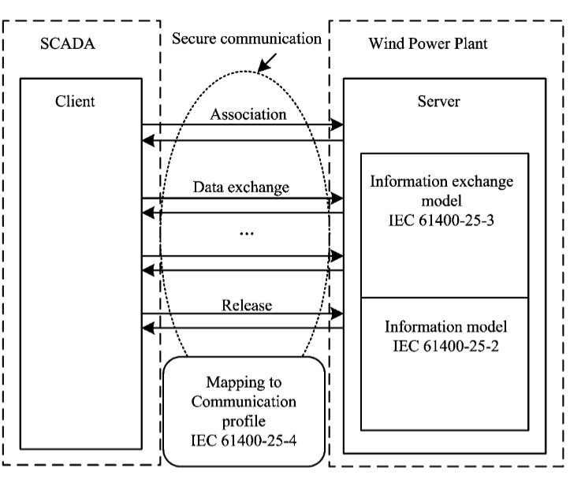
Figure 21: Communication model for wind power plants defined in IEC 61400-25 [117]
Part 25-1 limits the standard to communications “between wind-power-plant components such as wind turbines and actors such as SCADA systems” in a client–server setting [118]. IEC 61400-25 mirrors the IEC 61850 [120] object hierarchy but tailors the Logical-Node catalogue to wind-specific functions. Key nodes include WTUR (turbine summary), WROT (rotor), WGEN (generator), WCNV (converter), WYAW (yaw), WNAC (nacelle) and WMET (meteorology), plus grid-interface nodes reused from IEC 61850’s power-system set. Part 25-2:2015 [120] lists roughly 130 wind Logical Nodes and more than 2 000 Data Objects; each inherits Common Data Classes so value, quality, timestamp and units behave exactly as they do in IEC 61850 [120].
Part 25-3 keeps the IEC 61850 service groups data access, buffered/unbuffered reporting, logging, control and file transfer while adding advice for high-latency offshore links and bursty meteorological streams. Functional-constraint tags (ST, MX, CF, SP, SE, CO) continue to flag whether an attribute is readable, set-table or reportable [121].
Part 25-4 binds the model to MMS/TCP, enabling plug-and-play with IEC 61850 gateways [123]. Part 25-5 defines a SOAP/WS-Transfer profile suited to enterprise energy-management systems [124]. Part 25-6:2016 adds an OPC UA profile and a condition-monitoring extension so high-frequency vibration or oil-analysis data can reach analytics platforms in sub-second latencies [124].
Edition 2 (2015–2017) harmonised terminology with IEC 61850, expanded meteorological and DER nodes and refactored the condition-monitoring model for gearbox, blade and generator sensors. Working Group 25 is drafting Part 25-7 for cyber-secure peer-to-peer exchange between offshore arrays and HVDC converters, and is liaising with IEC TC 57 to align future nodes with the IEC 61850-90-xx extensions for micro-grids and storage.
Replacing more than one hundred proprietary “TurbineControllerTags” with standard Logical Nodes and Data Objects has cut SCADA point-mapping effort by about 30% in retrofits and enabled seamless fleet monitoring across mixed-OEM parks. Because time-quality semantics come straight from IEC 61850, condition-monitoring, meteorology and grid-export data can be fused without manual alignment, accelerating root-cause analysis for yaw errors or converter trips [117]-[124].
IEC 61850
The IEC 61850 family [69] information model for substation automation is fully object-oriented and arranged as a strict containment hierarchy. Every physical device is decomposed into successively finer information objects Figure 22.
At the top sits the Physical Device (IED), a protection relay, bay controller, or meter that can expose one or more Logical Devices (LDs) to separate its functional domains. Each Logical Device hosts multiple Logical Nodes (LNs). A Logical Node is the smallest functional block that needs to exchange data on the network: for example, XCBR encapsulates a circuit-breaker, MMXU a three-phase measurement unit, and CSWI a switch controller. The current catalogue lists 346 LN types spanning protection, control, metering, power-quality, condition monitoring, and DER integration.
Inside every LN resides a set of Data Objects that capture state, settings, or measurements. In XCBR, typical Data Objects include Pos (breaker position), OpCnt (operation count), and BlkgOpn (trip block). Data Objects decompose further into typed Data Attributes, integers, floats, timestamps, and quality flags. To ensure all vendors assign the same meanings to these attributes, IEC 61850 groups them into Common Data Classes (CDCs): a binary status uses CDC SPC (value, quality, timestamp), while an analogue such as voltage magnitude, uses CDC MV (value, units, scale factor, range). Every attribute carries a Functional Constraint ST (status), MX (measurement), CO (control), CF (configuration), SG/SE (settings), or DC (description) that tells clients which services (read, report, log, operate) apply.
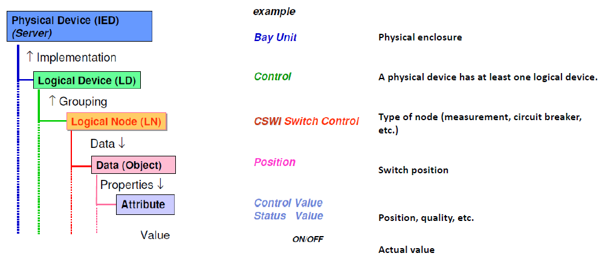
Figure 22: IEC 61850 Object hierarchy from Device to attribute [126].
To describe an entire substation, the same hierarchy is serialised in XML as the Substation Configuration Language (SCL). Four file types support the life cycle: ICD (device capabilities), CID (site-specific settings), SSD (single-line and functional spec) and SCD (complete plant description). Because every LN, Data Object and Attribute is referenced by a path such as Device/MMXU1.V.phsA.mag.f, engineering tools can auto-discover points no vendor-specific address tables are required. Namespaces in the files anchor model versions so utilities can combine the core catalogues of Parts 7-3 and 7-4 with later extensions for wind, hydro, DERs or EV chargers without collisions.
At run-time the data appear over three service sets: MMS for configuration polls and event reports, high-speed GOOSE frames for trips and interlocks, and Sampled Values streams for time-critical analogue samples. Because the data names are identical across mappings, the attribute Pos.stVal in a GOOSE frame has the same meaning as Pos.stVal read via MMS. Together with IEC 62351 security and the conformance-testing rules of Part 10, this architecture delivers true semantic interoperability: multivendor devices can join the station LAN, advertise their self-descriptions and exchange commands or measurements within milliseconds without protocol converters.
The public IEC 61850 catalogue now lists 2436 Data Objects and 346 Logical Node classes. What began two decades ago as a protection-and-control model has expanded to cover power quality, asset condition, distributed generation and electric-vehicle charging. This single, future-proof dictionary eliminates bespoke point lists, reduces wiring and commissioning effort, and keeps substation information machine-readable throughout the asset life cycle [125]-[128].
IFC (Industry Foundation Classes)
Industry Foundation Classes (IFC) [72] is an open international standard developed by the Building SMART International for Building Information Modeling (BIM). It facilitates interoperability in the architecture, engineering, and construction (AEC) industry by providing a standardized data schema. The IFC schema supports the representation and exchange of structured data related to buildings and infrastructure throughout their entire life cycle, including various entities such as buildings, bridges, and roads, along with their geometry, materials, and properties [129].
Core Components of IFC
-
Data Schema: The IFC schema is intricately defined using the EXPRESS language, as per ISO 10303-11. This schema is thoughtfully organized into several conceptual layers, each serving a vital purpose. These layers comprise core frameworks that provide the essential building blocks, shared schemas that facilitate interoperability, domain-specific schemas tailored to specific fields, and resource schemas that encompass various auxiliary data structures [129].
-
Documentation: An extensive and user-friendly set of documentation is available in HTML format. This resource meticulously outlines entities, attributes, relationships, and practical usage examples, ensuring users can navigate the complexities of the schema with ease and clarity [129].
-
Property and Quantity Sets: The schema features well-defined and standardized sets for properties (denoted as Pset_) and quantities (noted as Qto). These definitions are crucial for maintaining uniformity and ensuring extensibility, thereby ensuring that data representation remains consistent across various applications and innovative implementations [129].
-
Exchange Formats: The primary format used for exchanging data is the STEP Physical File Format (ISO 10303-21), which is typically identified by the .ifc file extension. In addition to this main format, the schema supports various other exchange formats, including. ifcXML and ifcZIP, thereby providing users with flexible options for data sharing and integration [129].
IFC 4.3.2 introduces a set of carefully defined Model View Definitions (MVDs) designed to accommodate a variety of distinct use cases in building and infrastructure projects.
-
Reference View: This version is tailored explicitly for effective coordination and enhanced visualization, providing stakeholders with a clear and comprehensive understanding of the project layout and elements.
-
Alignment-Based View: This MVD is ideally suited for infrastructure projects that require alignment-based modelling, allowing for precise representation of geometric arrangements and ensuring that all elements are accurately aligned.
-
Design Transfer View: This definition focuses on facilitating the seamless transfer of design intent and intricate details between various stakeholders, streamlining collaboration, and ensuring that crucial information is communicated effectively.
These MVDs play a crucial role in ensuring that software implementations can be tailored to meet specific workflows and project requirements, thereby enhancing the overall efficiency and effectiveness of project execution.
Relevance to CELINE
This comprehensive development process aligns with ISO 19650 standards for information management, emphasizing the importance of structured methodologies in creating reliable and robust frameworks. IFC 4.3.2 expands the scope of BIM to encompass infrastructure domains, including bridges, roads, railways, and waterways. It offers a unified data model that promotes collaboration and supports the entire lifecycle of built assets. IFC is implemented in various machine-readable formats for interoperability, including EXPRESS, XML Schema, RDF/OWL (under development), JSON Schema (under development), and JSON structured taxonomy. As part of openBIM initiatives, IFC ensures semantic consistency, data longevity, and tool-neutral collaboration, thereby facilitating advanced applications such as digital twins and the integration of smart infrastructure.
OASIS Energy Market Information Exchange (EMIX)
EMIX [130] defines four elemental building blocks: Price, Product, Schedule and Unit/Quantity wrapped in an XML envelope that travels over SOAP or REST services. Because every message carries both economic terms (currency, price basis, contract side) and operational context (start time, duration, ramp constraints), it can be parsed by automated trading agents as well as by DER controllers executing local optimisation. Its schema namespaces (emix, power, resource) are fixed to the 2011-06 URI so that instance documents remain forward-compatible even as the underlying CIM or WS-Calendar versions evolve.
Work on EMIX began in 2009 under OASIS’s eMIX Technical Committee, a first Committee Specification Draft (CSD) was posted in late 2010, and Committee Specification 02 (CS-02) was approved on 11 January 2012, marking Version 1.0 of the standard. After publication, the TC issued two maintenance errata in 2014 and 2017 to align XML enumerations with WS-Calendar 1.0 and to clarify conformance language.
The scope of EMIX is limited to “actionable information”: it does not prescribe market-clearing algorithms or tariff logic, instead it standardises the payload that any such mechanism must consume or emit price signals, bids, tenders, options, delivery acknowledgements and resource capabilities. The model expressly supports both intrinsic attributes (those measurable at the delivery point, such as kWh and voltage class) and extrinsic attributes (such as carbon provenance or renewable warrants) via a warrant sub-schema, ensuring that green premiums or ancillary rights can accompany the base commodity.
EMIX messages normally pass between a client (buyer, seller or aggregator) and a server (market operator, tariff repository or peer) using web-services bindings defined in Energy Interoperation. A typical interaction begins with a context handshake, followed by a product-description query and a stream of bids or offers, all validated against the EMIX XSD.
At schema level the information model is partitioned into four profile files: emix.xsd (core envelope, price types, extensibility rules), siscale.xsd (metric prefixes), power.xsd (real/reactive/apparent power & energy items) and resource.xsd (generator, storage and demand-response capability descriptions). Each concrete product inherits from the abstract ProductDescription class, which itself extends the Artifact attachment class borrowed from WS-Calendar. Conformance rules mandate that every schedule header contain a globally unique UID, ISO-8601 timestamps and a currency code from ISO 4217.
OpenADR 2.0 price and event messages embed EMIX BusinessItems to carry dynamic prices to VEN devices; the profile guide maps oadr:eiEvent/eiSignal/currentValue onto an EMIX Price element so thermostats or EV-chargers can execute economic dispatch [131]. ISO/RTOs in North America convert market‐clearing prices to EMIX before passing them to DER aggregators, while European research projects such as Platone rely on EMIX/WS-Calendar pairs to exchange flexibility bids between DSOs and prosumer platforms [3]. The model’s warrant mechanism is now used by Guarantees-of-Origin registries to link renewable energy certificates to individual retail blocks.
The OASIS eMIX TC remains active, with work items focused on (i) JSON-LD serialisations for constrained IoT devices, (ii) digital-signature profiles that bind warrant hashes to the enclosing business item, and (iii) tighter alignment with ISO 20022 for cross-asset settlement. Meanwhile, open-source libraries such as cim-emix and ws-calendar-python simplify validation and code-generation, and several commercial DERMS platforms now expose EMIX endpoints alongside proprietary REST APIs, signaling increasing market uptake [133].
OEMA (Ontology for Energy Management Applications)
The OEMA ontology [74] network contains different energy domains of data.
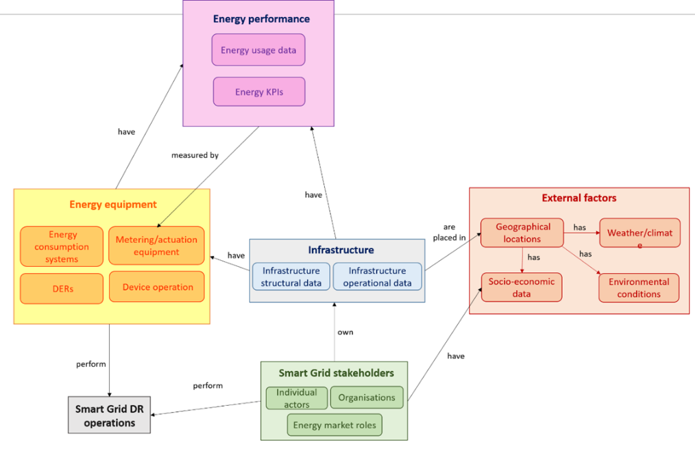
Figure 23: Overview of the OEME classes.
It is made up by the following ontologies: OEMA Infrastructure ontology, OEMA Energy and Equipment ontology, OEMA Geographical ontology, OEMA External Factors ontology, OEMA Smart Grid Stakeholders' ontology, OEMA Energy Saving ontology, OEMA Units of Measure ontology.
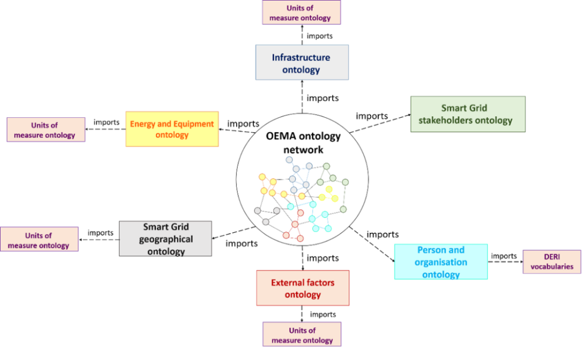
Figure 24: OEMA composition.
OEO (Open Energy Ontology)
The Open Energy Ontology [164] is an ontology for all aspects of the energy modelling domain. It is developed in four main modules:
-
oeo-model: a module for all entities related to models and modelling
-
oeo-physical: a module for all entities related to the world of energy and energy generation
-
oeo-social: a module for all relevant social and economic aspects of the energy domain
-
oeo-shared: a module to cover entities and relations needed in all of the modules above to prevent them getting implemented multiple times.
A supplementary module is the oeo-physical-axioms module, which contains general class axioms.
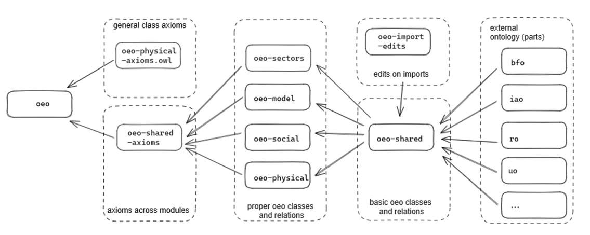
Figure 25: Overview of the OEO modules.
Ontology-Based Facility Data Model for Energy Management (OFDMEM)
The OFDMEM (Ontology-Based Facility Data Model for Energy Management) [165] proposes a semantically rich reference model, often called the core facility ontology, designed to harmonise the heterogeneous data that flows through large, multi-vendor energy infrastructures. Its primary objective is to underpin advanced Energy Management Systems (EMSs) with a common vocabulary that describes every relevant physical asset (from pumps and air-handling units to lighting panels), the signals they exchange, and the operational policies that govern them, so that higher-level services such as fault detection, diagnostics, and ISO 50001-compliant performance tracking can reason consistently across diverse data sources. In the original work the ontology was created within the FP7 CASCADE project and validated at two complex demonstration sites (Milan-Malpensa and Rome-Fiumicino airports) where it acted as a semantic “glue” between building-management systems, weather feeds and supervisory analytics, dramatically simplifying data integration tasks and enabling airport energy managers to query high-level performance indicators that were previously locked inside vendor-specific silos.
Structurally, the ontology draws a clear line between abstract and physical knowledge. Abstract entities capture non-tangible concepts such as data-exchange formats, communication protocols, and maintenance policies, while physical entities mirror the real-world objects that consume or influence energy within a facility. The physical branch is further refined by a plant class, representing concrete energy-related subsystems (HVAC, lighting, baggage handling, etc.), and by a topology class that maps the facility’s spatial hierarchy through area, zone, and sector concepts. This separation allows reasoning engines to answer questions that mix spatial, technical, and procedural dimensions (e.g., “Which air-handling units in Zone B are using legacy Modbus signalling and are due for filter maintenance?”) without forcing each application developer to reinvent those relationships.
Specialised subclasses extend the model’s expressive power. Plant instances are populated with detailed equipment descriptions, their sensor and actuator signals, and the dependencies among them; dataExchange specifies how values move between systems and external services; and policy models operational rules or maintenance workflows that may trigger control actions. Because every class is aligned with upper-level ontologies such as SUMO, and linked to industry schemata like CIM and IFC, the facility model can interoperate with external knowledge graphs or BIM repositories, supporting seamless data migration along the engineering life cycle from design to operation. Ontology reasoning then elevates raw telemetry (e.g., temperatures, set-points, alerts) into knowledge: it can infer which devices are causally related, whether a temperature spike violates comfort policies, or which corrective actions will save energy at the lowest lifecycle cost.
Although airports provided the initial proof-of-concept, the ontology’s scope is deliberately generic. Any infrastructure that exhibits similar complexity (e.g.,industrial campuses, hospitals, university estates, or smart-city districts) can reuse the core classes and extend them with domain-specific specialisations. In practice, the authors report that modelling effort scales gracefully: after the core ontology is fixed, new facilities only require adding equipment instances and filling in spatial topology, while all higher-level queries and analytics work out-of-the-box. That reuse potential is critical where multiple sites must be benchmarked under a single EMS dashboard, or when third-party service providers need to plug analytics into existing supervisory control networks.
For the CASCADE pilots, the ontology was integrated via a RESTful middleware that exposed SPARQL endpoints and reasoner services to applications performing fault detection and load optimisation. During live trials it enabled early identification of equipment malfunctions, supported what-if analyses for retro-commissioning, and provided evidence for targeted investments that achieved measurable energy savings. Importantly, the semantic layer also reduced engineering time: once the ontology had been populated, adding a new meter or sensor required only updating its instance description, with no amendments to application code.
Relevance to CELINE
CELINE’s ambition is to create an open, cross-sector Digital Ecosystem that fuses community-scale energy data with AI assistants and Digital Twins. The Facility Data Model offers CELINE a mature, field-tested semantic backbone for the built-environment slice of that ecosystem. By reusing or aligning with the core facility ontology, CELINE can guarantee that devices, user actions, and spatial contexts inside its demonstrators in Valencia, Lappeenranta, and Alpe Cimbra are described in a uniform, machine-interpretable way. This directly supports CELINE’s goals of data sovereignty and user-centric services: local communities can extend the ontology with their assets without breaking interoperability, AI tools can reason over multiple sites using the same predicates, and cross-sector links, e.g., correlating building loads with mobility or weather datasets, can be established through existing mappings to CIM, IFC or SUMO. In short, embedding the ontology within CELINE would accelerate Digital-Twin construction, simplify service replication across regions, and provide a proven foundation for explainable, knowledge-driven energy management.
UCO (Ontology for Cybersecurity)
The UCO (Ontology for Cybersecurity) [135] provides a formal structure to model and reason about entities, relationships, and events in the digital security domain. These ontologies help standardize terminology, link related concepts like cyberattacks and threat actors, and enable systems to perform semantic reasoning. The goal is to enhance understanding, automate detection, and improve coordination across diverse cybersecurity systems.
A well-structured ontology allows for the representation of not only static concepts but also dynamic threat behaviour and context. As shown in Figure 26, a cyber-attack is associated with three main descriptors: an IPDescriptor, a DateDescriptor, and a MaliciousActionDescriptor [134]. These descriptors provide contextual metadata, such as when and where an attack occurred and what type of malicious action it involved. Ontology also supports further granularity, detailing elements like protocols, ports, and specific actions taken, helping analysts and machines alike better assess the nature and severity of a threat.
An example of a broader ontology framework is the Unified Cybersecurity Ontology (UCO), illustrated in Figure 27. UCO integrates various cybersecurity standards and vocabularies such as STIX, MAEC, and CybOX to create a unified semantic model for cyber threat intelligence [135]. This integration promotes interoperability among tools, supports automated reasoning, and enables more effective threat sharing and response mechanisms across organizations.
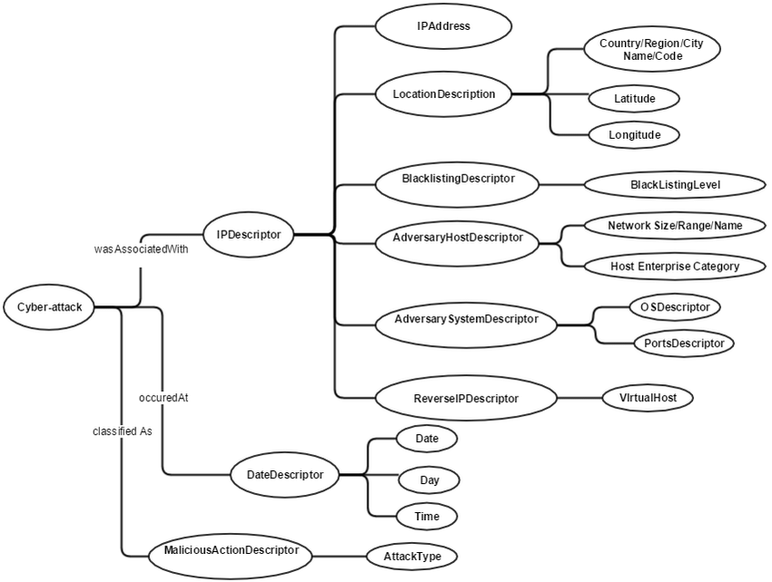
Figure 26: Cybersecurity Ontology describing a cyber-attack and its contextual descriptors [134]
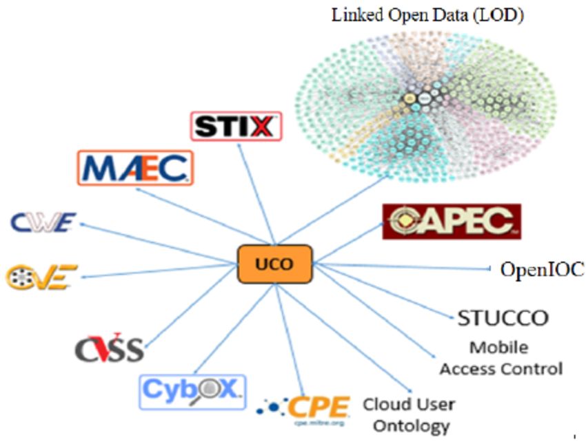
Figure 27: Unified Cybersecurity Ontology (UCO) integrating multiple threat intelligence standards [135]
Ontology on Cascading Effects in Critical Infrastructures
The Ontology on Cascading Effects in Critical Infrastructures [75] was created to give researchers, operators, and policymakers a shared semantic backbone for analysing how disruptions propagate across interdependent systems that underpin modern society. Developed with the SaBiO methodology and grounded in a systematic literature review, the ontology formalises the domain vocabulary, captures the cardinal relations among concepts and constrains their logical use; it was further validated against real incident reports to prove practical fitness. At its heart lies the observation that failures rarely stay inside the system where they start: a transformer fire can black out a neighbourhood, halt water-pumping stations, throttle telecommunications, and ultimately endanger public safety. The ontology, therefore, sets out to make such multi-sector chains explicit so they can be queried by machines, simulated by digital twins, and reasoned over by decision-support tools.
To achieve that aim, the model organises knowledge around a set of top-level classes that mirror the causal chain of a cascading event. CriticalInfrastructure describes physical or virtual assets (power grid, water network, hospital, data centre) and links them to a broader InfrastructureSector. InfrastructureComponent refines an infrastructure into nodes (substations, pipelines, servers) whose operational state is tracked through Function (the service a component provides) and Capacity (how much of that service it can deliver). A potentially disruptive Hazard (natural, technological, or human-made) is represented alongside its triggering InitialEvent. When a component’s functionality is degraded, the ontology records a Failure that can generate a downstream CascadingEvent. The propagation itself is modelled by the pair Dependency/Interdependency: the former captures a unidirectional reliance (e.g., water plants depend on electricity), while the latter allows bidirectional or networked couplings. Interdependencies are further qualified as physical, cyber, geographic, or logical, following the canonical Rinaldi taxonomy, because each pathway alters both the speed and severity with which damage spreads. Resulting knock-on effects are quantified through Impact (monetised loss, population affected, environmental harm) and assessed by SeverityLevel and RecoveryTime. Supporting classes such as Actor, Location, TimeWindow, MitigationAction, and ResilienceMeasure allow the ontology to bridge from descriptive analysis to actionable planning.
The ontology’s breadth makes it applicable across all critical-infrastructure domains that regulators typically recognise (energy, water, transport, communications, health, finance, food, government services) but it is especially useful where those domains overlap and where data about incidents, flows, and capacities can be harvested automatically. In risk assessment, it underpins knowledge graphs that expose weak links before crises strike; in emergency-management training it feeds simulation engines that replay historic black-outs or earthquakes and lets responders test alternative mitigation strategies; in cyber-physical security it provides a neutral vocabulary to describe blended threats and the physical consequences of cyber penetration; in long-term resilience studies it supports comparative analytics across regions or sectors by normalising terminologies. Because the classes are mapped to standard upper ontologies and encoded in OWL, the model can be imported directly into reasoning engines to detect inconsistent dependency chains, infer hidden vulnerabilities, or compute “most-critical” nodes whose reinforcement yields maximal systemic benefit.
Relevance to CELINE
The Ontology on Cascading Effects in Critical Infrastructures offers a rigorously defined, machine-processable framework that captures the domino logic of infrastructure failures from initiating hazard to final societal impact. Its objectives, class structure, and proven applicability across multiple sectors make it an ideal complement to CELINE’s ambition of building resilient, community-driven, digitally enabled energy ecosystems.
OntoMG
OntoMG (Ontology for Microgrids) [166] was conceived as a comprehensive semantic model for representing every facet of a microgrid so that heterogeneous equipment, software tools and stakeholders can exchange information seamlessly. Its two headline goals are to overcome the persistent interoperability gap that arises when devices from multiple vendors communicate through different data models, and to capture the multi-objective nature of micro-grid operation, namely the need to balance identification, operational, mobility, economic and ecological considerations at once. In practice, OntoMG achieves these goals by aligning itself with widely used standards such as the IEC 61970/61968 CIM object model and IEC 61850 data structures while extending them with the concepts that are unique to small-scale, highly distributed power systems.
At the centre of the ontology is the class Microgrid, a subclass of the more generic EnergyUnit. A micro-grid instance is decomposed into three structural branches: DESBranch for distributed generation sources (wind turbines, PV strings, diesel gensets and other DERs), ESBranch for storage systems (batteries, super-capacitors, hydrogen tanks, etc.) and ELBranch for consumption loads. Each branch, in turn, aggregates concrete devices that inherit from the abstract classes DistributedEnergySource, EnergyStorageSystem and EnergyLoad. These devices share a suite of IdentificationAspect properties (unique ID, brand, device-type and a time-stamped power signature) that make plug-and-play recognition and configuration possible. Operational behaviour is represented through an OperationalAspect package of attributes such as nominal power, efficiency curves and real-time status. A complementary MobilityAspect records a component’s location changes and temporal availability, enabling the model to reason about equipment relocation (an increasingly common scenario in mobile prosumer fleets and EV-to-grid schemes). The EconomicAspect captures cost metrics: CAPEX, OPEX, start-up and shut-down costs, while the EcologicalAspect links devices to emission factors so that dispatch logic can weight carbon impact against economics.
Beyond the physical layer, OntoMG incorporates abstract classes for Stakeholder, MarketParticipation, PowerSchedule and Event, allowing it to model contractual relationships and price-driven demand–response events as first-class citizens. Because object properties link every device and stakeholder instance to aspect-specific datasets, the ontology can act as a knowledge heart for advanced reasoning engines: similarity queries on power signatures enable automatic scheduling suggestions, constraint solvers can optimise dispatch with full visibility of costs and emissions, and security frameworks can map cyber–physical vulnerabilities directly onto the asset graph. These capabilities make OntoMG useful in application domains that range from day-ahead energy-market bidding, real-time micro-grid control, and islanding management to asset planning, resilience analysis, and cyber-security assessment of community grids.
Relevance to CELINE
The ontology has already been validated in the real-scale ISare micro-grid demonstrator in the Basque Country, where its semantic layer sat between low-level BACnet/Modbus field protocols and high-level optimisation services, and earlier studies have shown that it can map cleanly to prosumer-centric profiles, MIRABEL flexibility offers, and OASIS Energy-Interop messages. Its modular design also means that external ontologies (e.g., SAREF for device functions or mobility vocabularies for electric vehicles) can be imported as needed without losing consistency.
OntoPowSys (Ontology for Power Systems)
The OntoPowSys [76] is a domain ontology expressly engineered to capture the physical, economic, and operational knowledge that underpins modern power-system operation, with the explicit goal of enabling seamless knowledge exchange between electricity networks and the many other technical domains that converge in complex settings such as eco-industrial parks. Conceived within the J-Park Simulator (JPS) research programme, OntoPowSys is written in OWL 2 and grounded in description logics so that automated reasoning can check consistency, infer implicit facts and drive agent-based decision support. At its core the ontology offers a rigorously formal vocabulary for energy-management strategies and grid topology, thereby providing a machine-interpretable lingua franca that bridges data silos and eliminates the hand-coded interfaces that traditionally separate power-system engineers from, for example, chemical-process, logistics or economic-analysis teams.
The objectives that guided its development are threefold. First, OntoPowSys must be expressive enough to model the heterogeneous assets, signals, and constraints that populate a real electrical network, from high-level socio-economic performance indicators down to the scalar quantities of voltage magnitude and angle seen at individual bus nodes. Second, it must expose those representations through reusable axioms so that computational agents can automatically generate grid topologies, launch optimal-power-flow (OPF) studies, or explore “what-if” scenarios involving cross-domain couplings such as the impact of a biodiesel plant on local electrical stability. Third, the ontology must interlock coherently with an upper-level, multi-domain framework (OntoEIP) so that the power-system module can exchange knowledge with chemical, transportation or water-network modules inside the same knowledge graph. The resulting artefact therefore fulfils a dual role as both a domain-specialist model for electricity and a plug-and-play component of a larger cross-sector digital ecosystem.
To meet these ambitions, OntoPowSys organises its concepts into several dense but logically orthogonal class hierarchies. A first branch describes the physical assets that constitute an electricity network: BusNode, ElectricalLine, Transformer, Switch, Substation, PowerConverter, PhotovoltaicPanel, PowerGenerator (with specialisations such as PhotoVoltaicGenerator and DispatchableUnits) and PowerLoad. Each of these classes is enriched with object and data properties that pin down electrical behaviour (e.g., hasRatedPower, hasCurrentType, isConnectedTo or realizes PowerGeneration/PowerConsumption) with economic descriptors such as capital or maintenance costs. A second branch captures scalar-quantity properties (Voltage, Current, Frequency, PowerFactor, etc.) that are themselves decomposed into angle and magnitude sub-classes where relevant, using composition roles like hasAngle or hasMagnitude. A third branch introduces mathematical-model abstractions, notably PowerSystemModel, MathematicalModel and a suite of agent classes (PowerFlowModelAgent, PowerDispatchModelAgent, SolarGeneratorModel, ForecastLoadModelAgent) that encode how computational services interact with the knowledge graph. Finally, an extensive set of economic-performance and cost classes (TotalCapitalInvestment, OperatingLaborCosts, ElectricNetworkCosts, EconomicPerformance) allows techno-economic analyses to be conducted with the same semantic backbone.
These classes are knitted together by richly typed relations that reflect real engineering semantics. For example, a PowerConverter simultaneously hasInput and hasOutput bus nodes, each annotated with Voltage and Current properties to facilitate AC/DC or DC/DC conversion studies; a PowerGenerator realizes PowerGeneration and is constrained by hasMinimumUpTime and hasStartupCost, enabling dispatch optimisation; and every Voltage individual isComprisedOf an angle and magnitude so that phasor calculus can be applied directly inside the graph. Such design patterns make the ontology amenable to rule-based reasoning engines and allow the JPS platform to populate the graph automatically from plant data, validate it with the HermiT reasoner, and then trigger OPF or energy-market simulations whose inputs are fetched semantically rather than by brittle data mappings.
OntoPowSys has already proven its worth in several application domains. Within the virtual eco-industrial park maintained by JPS, it has been used to auto-generate grid topologies for federated process plants, to study cross-domain couplings between a biodiesel facility and the surrounding electrical infrastructure, and to expose power-flow sensitivity data to logistics or chemical-production agents that need to schedule energy-intensive tasks. Beyond research parks, the ontology’s modularisation strategy (inheritance from the higher-level OntoEIP and OntoCAPE layers) makes it directly transferable to smart-grid demonstrations, micro-grid management, district-energy coordination and any scenario where power networks must be co-optimised alongside industrial or building systems. The consistent use of OWL 2 ensures that the same reasoning templates can migrate to other triple-store back ends or cloud-native knowledge graphs without refactoring.
Relevance to CELINE
The relevance of OntoPowSys to the CELINE project is immediate. CELINE plans to deploy an open-source, cross-sector Digital Ecosystem featuring community energy Digital Twins and AI assistants that must ingest real-time electrical, thermal and behavioural data while preserving data sovereignty and supporting replication across European climates and cultures. OntoPowSys can furnish CELINE’s Digital Twin layer with a ready-made, rigorously tested vocabulary for representing distribution-level assets, local generation, storage, demand-response constraints and economic KPIs. Because the ontology is already proven in cross-domain knowledge graphs, it dovetails with CELINE’s ambition to fuse energy data with inputs from mobility, weather or social-behaviour datasets. By adopting or aligning with OntoPowSys, CELINE would accelerate the semantic harmonisation of its three demonstrators, allow AI assistants to reason consistently about grid constraints, and create a semantic spine that supports both community-led self-consumption schemes and the pan-European replication foreseen in the project’s roadmap [136].
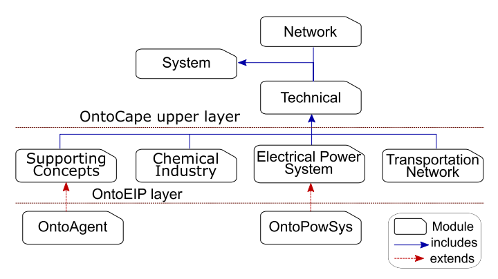
Figure 28: OntoPowSys (Ontology for Power Systems) overview [76].
Onto-SB
The Onto-SB (Human Profile Ontology for Energy Efficiency in Smart Building) [136] is an OWL 2-DL ontology that formalizes the human-centric aspects of smart buildings, providing the precise, machine-interpretable vocabulary a Building/Energy Management System needs to know who occupies a space, where they are, what they are doing and how devices and energy sources should respond so that each individual’s comfort is assured with minimal consumption. In contrast to earlier schemas that stopped at spaces, devices, or basic contexts, Onto-SB weaves in rich profiles, demographics, abilities, preferences, calendars, and inferred states alongside physical infrastructure and resource models, making it the semantic linchpin for behaviour-aware control, simulation, and analytics.
The ontology was built by combining a top-down reuse of established patterns (e.g., SSN/SOSA for observations, OWL-Time for temporal constructs) with a bottom-up addition of missing, human-profile concepts. Key classes such as Building, Place, Device, Service and EnvironmentalParameter were imported, generalized, and specialized to the smart-building domain, missing branches around the HumanProfile (age, gender, health, skills, comfort bands, calendars) and EnergySource (renewable vs. grid) were defined from scratch. For each concept, its own taxonomy was created, its properties assigned (e.g. hasProfile, locatedIn, usesAppliance) and logical relations established to support SWRL-based reasoning. The result is a coherent hierarchy of roughly 200 classes, 90 object properties, and 70 data properties that underpins every semantic query and control action.
Onto-SB splits into ten tightly interlinked modules, all rooted in the Building-Place core that anchors every concept to storeys, rooms, and zones (including indoor/outdoor distinctions). A parallel Time module leverages OWL-Time to stamp activities, events, and tariff windows. The Actors & HumanProfile branch models occupants (humans, pets, robots, software agents) with detailed profiles that record immutable traits alongside dynamic preferences and schedules. Activities partition into ScheduledActivity (calendar-imported) and InferredActivity (sensor-deduced), giving the reasoning engine anticipatory as well as reactive hooks. Devices, Sensors & Actuators expose their capabilities through abstract Service classes, while EnvironmentalParameters (temperature, humidity, illuminance, CO₂) translate raw telemetry into contextualized facts. The EnergySource module distinguishes renewables (solar, wind) from grid supply, annotating each with tariff and carbon-intensity metadata so that optimization engines can match demand with the cleanest or cheapest option. Figures 1–10 from the original specification illustrate each module:
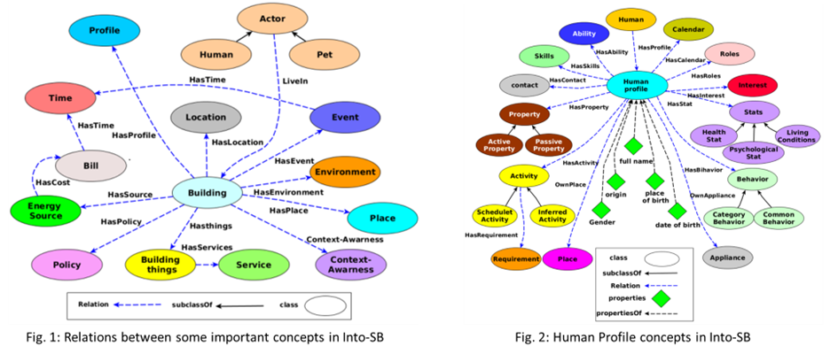
Figure 29: Onto-SB overview [136].
Figure 29–Figure 33 shows inter-concept relations as well as details the structure of HumanProfile, Activity, Actor, Service, Time, EnvironmentParameters, Appliance, Sources, and Place respectively.
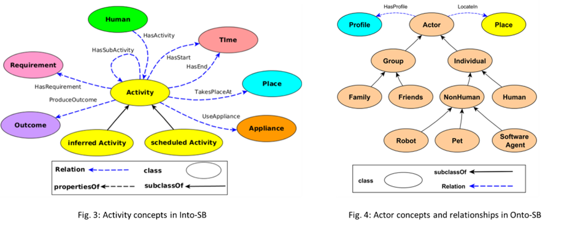
Figure 30: Onto-SB overview [136].
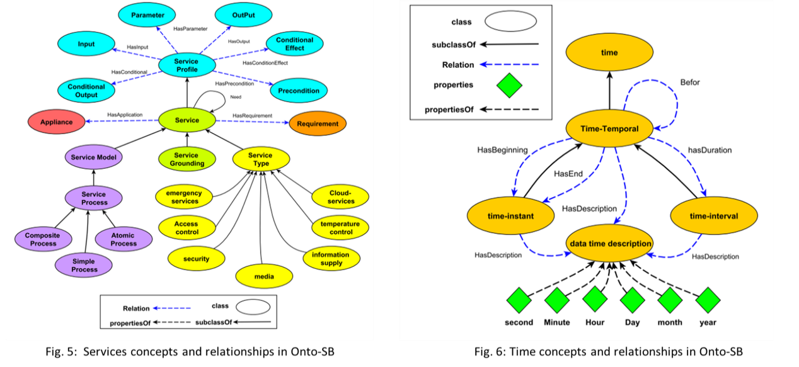
Figure 31: Onto-SB overview [136].
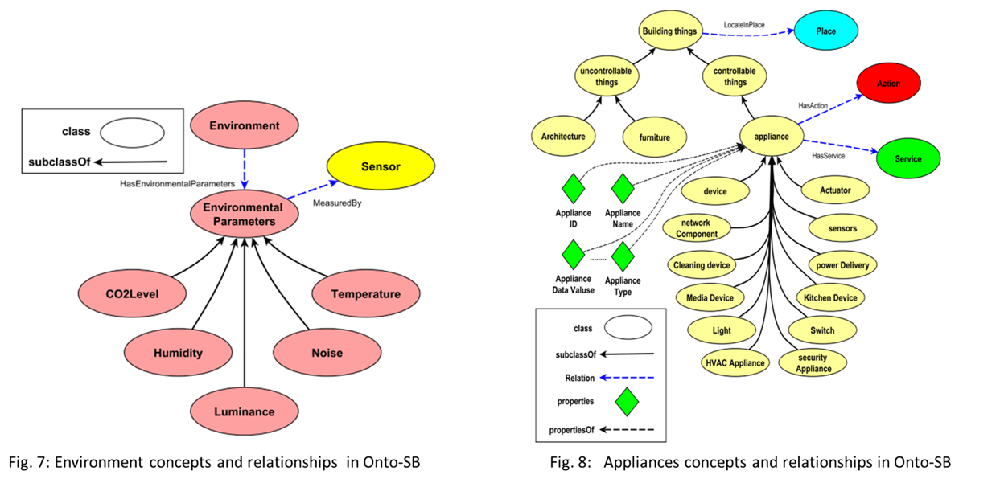
Figure 32: Onto-SB overview [136].
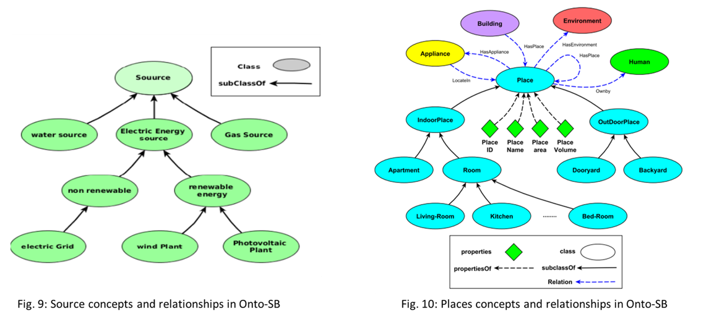
Figure 33: Onto-SB overview [136].
By weaving human profiles into the semantic, Onto-SB enables occupant-centred optimization that balances energy savings against personalized comfort bands rather than generic set-points. The Service abstraction decouples “what a device can do” from “how it is accessed,” promoting interoperability across heterogeneous IoT protocols. A library of SWRL rules (e.g., “if motion = false and lights = on → turn lights off,” “if indoor temp > preferred max → activate cooling”) converts low-level triples into high-level control actions. Activity-detection rules further allow the system to deduce tasks such as cleaning or working and adjust actuators proactively. This rich rule base, coupled with the ontology’s modular split between a stable core and optional extensions, means Onto-SB can be aligned seamlessly with Brick, SAREF4BLDG when tighter integration is required.
Onto-SB was prepared in Protégé 5 and serialized in OWL 2-DL. Its semantic consistency and query performance have been verified with the HermiT and Apache Jena reasoners. Control logic is defined declaratively in SWRL, co-located with the ontology rather than embedded in code. The current public release (v0.9, October 2018) comprises roughly 200 classes, 90 object properties and 70 data properties, and is available as an open-source package on GitHub [138].
When embedded in an intelligent context-aware BEMS for a four-occupant dwelling, Onto-SB-driven reasoning delivered ~40% operational energy savings while meeting each resident’s thermal and visual comfort targets. The ontology also underpins Open-SBS, an open-source simulator that lets researchers script occupancy schedules, weather files, and device portfolios, then run what-if studies on tariffs and renewable integration. Beyond energy efficiency, the model has been reused in knowledge-graph surveys, ambient-assisted living prototypes, security surveillance, and digital twin analytics, wherever human behaviour must guide automated decisions.
OntoWind Ontology
The OntoWind [77] ontology captures everything needed to describe and reason about wind-energy systems in a semantic framework. It answers key questions: what components make up a wind farm, how those parts connect, when and where data is collected or forecast, and which organizations produce or consume that data. Building on a semi-automated predecessor (WONT), OntoWind reorganizes the class hierarchy for clarity, adds both simple labels and weighted (“fuzzy”) properties to each concept, and populates the model with real-world examples, making it a complete, openly available resource for both research and operational use.
The ontology was constructed by first restructuring the existing WONT vocabulary into four top-level pillars: WindRelatedData, WindRelatedModel, WindRelatedStructuralComponent and WindRelatedOrganization and then extending each pillar to cover the full breadth of wind-energy concepts. WindRelatedData models both measurements (e.g., WindSpeed, WindDirection, Temperature, Humidity) and forecasts from Numerical Weather Prediction or statistical models. WindRelatedModel captures the forecasting algorithms themselves (ALADIN, IFS, WRF, ANFIS, ANN, SVM, etc.). WindRelatedStructuralComponent represents the physical assets: WindPowerPlant, WindTurbine, Sensor with geo-referenced capacities and component breakdowns (hub, blade, gearbox, generator). WindRelatedOrganization enumerates key international and national bodies (ECMWF, WMO, MGM, CENER, NCAR, etc.) that produce data or standards. Alongside these branches, a small-Time module (reusing OWL-Time) timestamps every datum or event, ensuring temporal queries and rules can be expressed unambiguously.
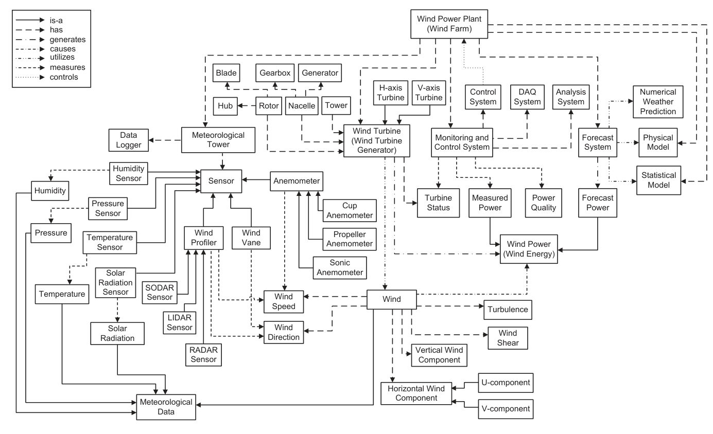
Figure 34: The Initial Version of the Domain Ontology for Wind Energy [141].
Rather than a flat list of terms, OntoWind presents a deep, modular hierarchy (see Figure 35). The WindRelatedData branch defines both raw sensor outputs and forecast streams, each stamped with value and date properties. The WindRelatedModel branch structures forecast engines into NumericalWeatherPrediction versus WindPowerForecastModel subclasses, then further into concrete algorithms (WRF, ANFIS, etc.). WindRelatedStructuralComponent mirrors the layout of a modern wind farm, from the overall WindPowerPlant down to individual Turbines, Sensors and ControlSystems. WindRelatedOrganization lists both InternationalOrganization and NationalOrganization subclasses, each populated with real instances complete with webAddress, twitterAccount and country annotations for easy integration into web portals.
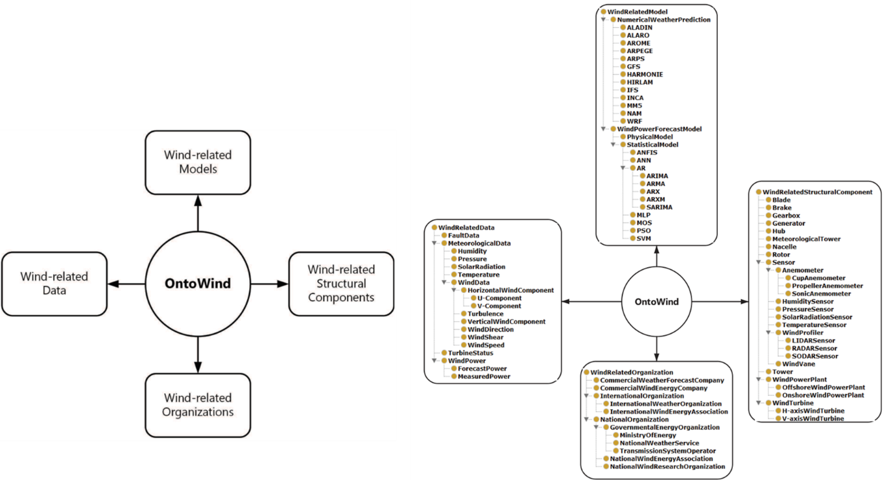
Figure 35: The four general concept classes in OntoWind and their immediate sub-hierarchies.
To make OntoWind directly usable, each class carries rich annotation and data properties. Multilingual support comes from labelEN/labelTR (and could be extended to labelES, labelFR, etc.), while fuzzy membership is encoded in membershipValueLabel* and membershipValueSynonymSet* attributes real numbers in [0,1] that weight how central each term is to the wind-energy domain. A total of 25 concrete instances populate the WindRelatedOrganization branch (e.g., MGM for Turkish State Meteorological Service, ECMWF, WMO, CENER, NCAR), each carrying its URL, Twitter handle and country code. This transforms OntoWind from a pure taxonomy into a knowledge-graph-ready asset complete with real entities.
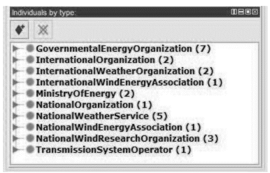
Figure 36: Number of Instances per Concept Names in OntoWind.
In [140], the authors present a web-based semantic portal that demonstrates OntoWind in action: users browse the full taxonomy, click through real-world organization instances (complete with live website and Twitter links), and view scholarly articles automatically classified as wind-energy relevant via a membership-sum algorithm (threshold ≥ 1.0). When tested on 91 articles from Elsevier’s Energy journal, the OntoWind based classifier attained 93.4% accuracy outperforming its WONT-based precursor (81.3%) and underscoring the value of the ontology’s extensions.
OpenADR Ontology
The Open Automated Demand Response (OpenADR) ontology [142] is a sophisticated semantic framework designed to formalize and advance the OpenADR standard, significantly enhancing interoperability among various demand response (DR) systems within the evolving innovative grid environment. At its core, ontology defines essential concepts crucial for the successful implementation of demand response initiatives. These include Demand Response Events, Signals (which encompass pricing, load levels, and multiple signal tiers), and various Actors such as Virtual Top Nodes (VTN) and Virtual End Nodes (VEN). By organizing these key components into a machine-readable format, the OpenADR Ontology enables a standardized and automated exchange of critical DR-related information, including event schedules, price signals, consumer availability, and individual preferences.
This structured approach not only allows advanced systems to reason over demand response events semantically but also facilitates the integration of diverse platforms. Consequently, it empowers intelligent, automated responses to fluctuating grid demands, promoting more efficient energy management. The ontology is developed using the Linked Open Terms (LOT) methodology and is encoded in the Web Ontology Language (OWL). It also incorporates concepts from established ontologies, such as OWL-Time and GeoSPARQL, effectively representing both temporal and spatial data. Overall, the OpenADR Ontology serves as a vital tool for advancing demand response strategies in innovative grid systems, fostering greater efficiency and responsiveness in energy management [142, 143].
Key components of the OpenADR ontology are:
-
EiEvent Service: Facilitates communication of demand response events between Virtual Top Nodes (VTNs) and Virtual End Nodes (VENs). It includes classes such as Event, Signal, VTN, and VEN, and utilizes EventDescriptor to detail event characteristics [142].
-
EiReport Service: Enables VTNs and VENs to exchange reports on the state of resources. It defines Report classes, including MetadataReport and DataReport, with descriptors specifying report types, reading types, and measurement units [142].
-
EiRegisterParty Service: Manages the registration process of VENs to VTNs. It captures information about communication profiles, transport methods, and capabilities, utilizing properties such as hasProfileName, hasTransportName, and hasReportOnly [142].
-
EiOpt Service: Allows VENs to communicate their availability or unavailability for demand response events. The Opt class, along with associated schedules and market contexts, represents these preferences [142].
Relevance to CELINE
This Ontology is publicly accessible and available in multiple formats, including JSON-LD, RDF/XML, N-Triples, and Turtle, supporting both human-readable documentation and machine-readable data exchange. To align OpenADR with the CELINE objectives within the context of the European Green Deal, REPowerEU, and the digitalization of the energy system, we can map OpenADR’s capabilities to the specific goals of CELINE (Community Energy Living Labs for Inclusive and Networked Engagement), which focuses on inclusive, data-driven, and community-empowered energy transition. Here, Table 1 illustrates the connection between CELINE's objectives and Open ADR.
The OpenADR ontology may support the CELINE project through by providing a semantically interoperable Demand Response approach for developing new DR-based services within CELINE.
OpenFMB (Open Field Message Bus)
The Open Field Message Bus (OpenFMB) [145] is a grid-edge interoperability standard that couples a common, CIM-derived semantic data model with a publish–subscribe messaging framework so that solar inverters, batteries, protective relays, sensors and other field devices can exchange information locally, act autonomously and keep operating even when the wide-area SCADA link is unavailable. Developed by a coalition of utilities, vendors and national laboratories and first ratified as NAESB Retail Market Quadrant standard RMQ.26 in March 2016, the specification harmonises IEC 61968/61970 (CIM) and IEC 61850 semantics, serialises them in language-neutral Protocol Buffers and prescribes lightweight IoT transports such as MQTT, DDS or NATS for real-time peer-to-peer communication [145].
Figure 37 visualises how OpenFMB spans the primary, secondary, and tertiary timescales of grid control while bridging device protocols and utility-enterprise systems. The diagram maps primary-tier field devices (milliseconds), secondary-tier edge applications (seconds to minutes) and tertiary-tier enterprise systems (minutes to hours) onto the Open Field Message Bus, indicating the legacy protocols and OpenADR/2030.5, OCPP, or DNP3 channels that each tier can translate through the bus for peer-to-peer or aggregated coordination.
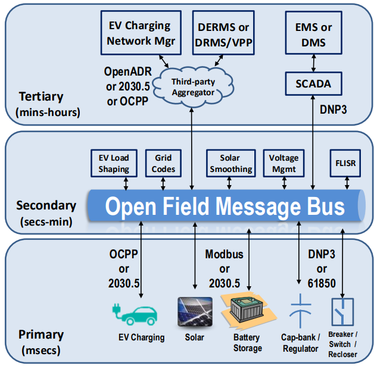
Figure 37: OpenFMB control-horizon tiers and protocol bridges [146]
OpenFMB emerged from a 2014 SGIP working group exploring “field message buses” for micro-grid coordination; Duke Energy’s first proof-of-concept was demonstrated in 2015. The NAESB ratification in 2016 produced Version 1.0 of the standard, formalising core profiles and the RMQ.26 document set. A users-group under UCAIug formed in 2018, and the inaugural “plugfest” interoperability test involving twenty-five companies took place in 2019. Version 2.0 of the UML model, focusing on distributed-energy-resource profiles and traceability from use case to code artefact, was published in 2020 together with an expanded cybersecurity framework and support for multiple simultaneous transports. In 2021 the UCAIug launched an Interoperability Testing & Certification Authority (ITCA) programme, while utilities began moving pilots into production feeders. The modelling taskforce has since issued incremental drops (2.1 in 2022 and 2.2 in 2024) that add IEEE 1547 grid-codes to inverter and storage control profiles, refine time-series telemetry structures and streamline topic naming for wildcard subscriptions [147].
At the core of OpenFMB is its layered architecture, which integrates various protocols and data models to ensure seamless communication among diverse devices. This architecture comprises multiple tiers, including lower-tier nodes (e.g., grid devices), middle-tier nodes (e.g., substations), and higher-tier nodes (e.g., utility control centres). Each tier utilizes legacy protocol adapters and common data model profiles to translate device-specific data into a standardized format, facilitating interoperability across the system. The use of publish-subscribe messaging patterns allows for efficient and secure data exchange, with support for multiple protocols operating simultaneously within the same framework.
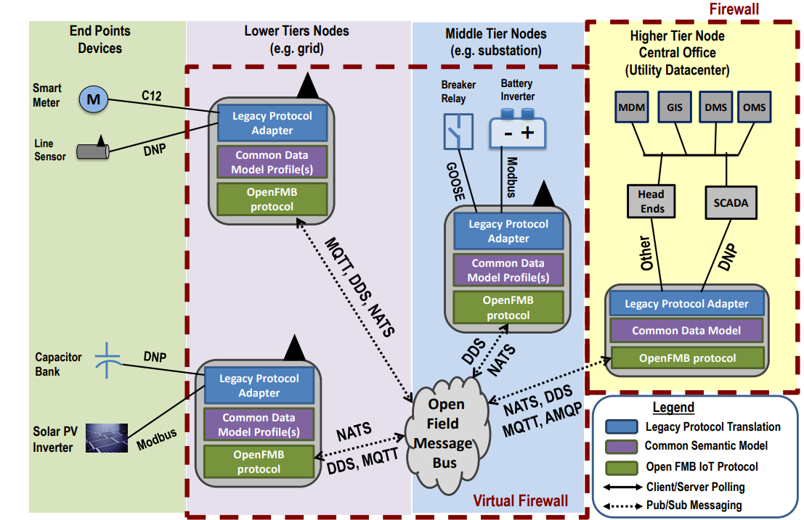
Figure 38: Open Field Message Bus (OpenFMB) Framework [147].
It’s information layer is maintained in an Enterprise Architect UML repository whose root package harmonises IEC 61968/61970 (CIM) and IEC 61850 classes (). Each device-type module (for example SolarModule, ESSModule, BreakerModule) is subdivided into four canonical profiles Reading, Status, Event and Control so every measurement or command carries a uniform header that includes a device mRID, a message UUID and an ISO-8601 timestamp. Mapping rules ensure loss-less round-tripping between the platform-independent model (PIM) and the platform-specific serialisations (PSMs) generated automatically in Protocol Buffers, IDL or XSD.
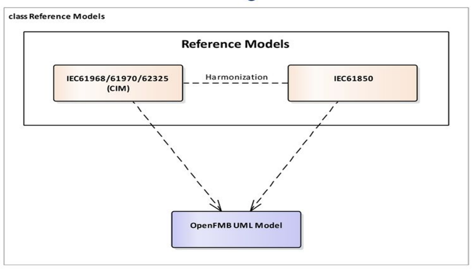
Figure 39: OpenFMB Data Model with Harmonized CIM and IEC 61850 Concepts [148].
As of mid-2025 OpenFMB is running in live micro-grids at Duke Energy, Consumers Energy and Hydro-Québec, supporting autonomous voltage control, black-start coordination and DER smoothing. The NAESB WEQ committee is evaluating a draft 2.3 package that extends profiles for vehicle-to-grid bidirectional chargers and introduces native FIPS-validated encryption. Seven commercial adapters from four vendors have already been certified by the UCAIug ITCA, and an open-source toolset hosted by Open Energy Solutions offers Docker images, a NATS broker and a Grafana-ready historian for rapid prototyping, signalling steady momentum toward wider industry adoption.
PARMENIDES Energy Community Ontology (PECO)
The so-called PARMENIDES Energy Community Ontology (PECO) [82] is designed to provide a unified vocabulary that ensures semantic interoperability across the data model and information layers within the framework of RECs in Europe. PECO achieves this by formally describing key aspects of energy communities (EC), such as methods for excess energy allocation, internal energy pricing mechanisms, and more. It further specifies the community members and their assets, including electrical and thermal energy generation systems, energy storage, and their properties, categorised as either static or dynamic. Furthermore, PECO defines the relationships among these components, accounting for factors such as asset ownership and system topology. These structured abstractions enable seamless real-time communication and data exchange among devices and interfaces deployed in project pilots. By leveraging this ontology, the primary aim is to optimise energy production and consumption within the community and its members, thereby achieving predefined optimisation objectives, such as cost minimisation, self-consumption maximisation, or reduction of CO2 emissions.
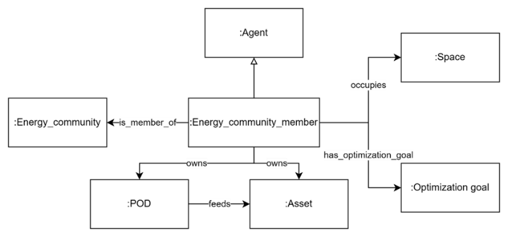
Figure 40: Energy Community member and related classes.
The following key domains are covered by PECO:
-
Energy Community and its Members: This domain encompasses energy community members (individuals) and their organizational structure at the EC level (legal entities). Figure 40 illustrates the Energy Community Member (ECM) as central concept within the PARMENIDES project, highlighting its key relationships. Points-of-Delivery (PODs), a specific type of asset, serve as the primary entry points for energy flow, and each ECM must possess at least one. Additionally, every ECM defines one or more optimization strategies tailored to its specific needs. Each ECM is also associated with a distinct Space. At present, an ECM can only belong to a single EC. However, this limitation may be revised in future iterations of the ontology to accommodate specific pilot requirements or align with national adaptations of the Renewable Energy Directive.
-
Energy Assets: This includes energy generation and storage assets across multiple energy vectors, such as electricity and heat. These assets are monitored and modelled to enhance flexibility or meet prosumer targets. Forecasts and schedules for energy production or consumption are also represented within this domain.
-
Flexibility Signals (Grid Perspective): This domain addresses incentives and grid tariffs issued by the Distribution System Operator (DSO) to enhance flexibility at the REC level. Economic benefits are provided to prosumers or the EC when consumption behaviour supports grid stabilization. PECO also enables the identification of specific flexibility suggestions for energy asset operation, including operational ranges or specific setpoints.
-
Prosumer Goals and Engagement (User Perspective): This includes preferences and optimization schemes for ECM, such as comfort maximization, environmental impact reduction, and cost minimization. These goals are considered by the Energy Management System (EMS) to parameterize optimization algorithms. Additionally, this domain facilitates communication between customers and EMS, displaying information about consumption, preferences, and suggested behaviour modifications based on optimization results.
PQONT (Power Quality ONTology)
The Power Quality ONTology (PQONT) [149] was conceived to fill a long-standing gap in the electrical-power community: the lack of a shared semantic vocabulary for describing, exchanging, and analysing power-quality (PQ) phenomena. Drawing on international standards and the experience of nationwide monitoring programmes, its designers assembled a formal OWL model that captures the parameters used to characterise PQ, the events and problems that arise when those parameters deviate from nominal values, and the procedures for measuring them. The overarching objective was two-fold: first, to harmonise the terminology engineers, utilities, regulators and researchers employ when they discuss voltage sags, flicker, harmonics or transients; second, to enable software agents (whether databases, diagnostic tools or natural-language interfaces) to interpret PQ data unambiguously and support advanced queries, visual analytics or automated compliance checks.
At the heart of PQONT lie three complementary groups of classes. The parameter branch models continuously measured electrical attributes such as frequency, voltageRMS, currentRMS, harmonic, interharmonic, flickerPst and unbalance. Each of these subclasses of the generic PQParameter class inherits metadata that record units, recommended sampling windows and normative limits. The event/problem branch represents discrete disturbances or persistent conditions detected when parameters cross those limits; subclasses include VoltageSag, VoltageSwell, Undervoltage, Overvoltage, Interruption, ImpulsiveTransient, OscillatoryTransient, FlickerProblem, VoltageHarmonicProblem and CurrentHarmonicProblem. These classes are linked to PQProblemSeverity, time stamps and affected network sections, allowing reasoning engines to differentiate, say, a momentary flicker from a long-term voltage depression. Finally, the procedure branch formalises how values are obtained and verified. Classes such as HarmonicProcedure, InterharmonicProcedure, FlickerProcedure, SpectralComponentProcedure and the more generic PQParameterMeasurementProcedure encode IEC-compliant signal-processing steps, tolerances and calibration data. Because many industrial and regulatory tasks revolve around “How was this figure measured?” rather than “What is its value?”, modelling procedures first-class ensures traceability and auditability of PQ assessments.
Complementing these core branches are auxiliary concepts, i.e, SpectralComponent, VoltageDeviation, Power, CurrentMagnitude, and PQEventDuration, that enrich queries and support domain-specific inference rules. For instance, a reasoner can classify an OscillatoryTransient as HighFrequencyOscillatoryTransient or MediumFrequencyOscillatoryTransient depending on the oscillation band or infer that a TemporarySag with depth below 70 % and duration above 1 s violates EN 50160 thresholds. Multilingual labels embedded in every class make PQONT especially suitable for international deployments and natural-language interfaces; a Turkish–English demo showed users could ask “Show me momentary sags in Ankara last week” and receive precise database results, the ontology handled the lexical mapping, while SPARQL retrieved the data.
Because PQ phenomena affect every layer of the electricity value chain, PQONT’s application domains are naturally broad. Utilities embed the model in supervisory control and data-acquisition (SCADA) archives to unify measurements from disparate meters and phasor measurement units. Grid operators combine it with CIM or IEC 61850 vocabularies to correlate PQ incidents with switching events. Industrial plants use PQONT-annotated logs to diagnose equipment malfunctions and schedule preventive maintenance. Regulators and certification bodies leverage the ontology to automate conformance reports, ensuring suppliers meet contractual quality thresholds. Researchers exploit its rich taxonomy to train machine-learning classifiers that detect emergent PQ patterns or to populate digital libraries for comparative studies. Finally, by integrating PQONT into middleware, software vendors can create plug-and-play dashboards that visualise harmonics, flicker or transients in a uniform way irrespective of the underlying instrumentation vendor.
Relevance to CELINE
The ontology’s relevance to the CELINE project is immediate and multifaceted. CELINE envisages an open-source, cross-sector, data-driven Digital Ecosystem that empowers energy communities with Digital Twins and AI assistants. Accurate modelling of distribution-level disturbances is critical for such twins, because voltage sags, swells or harmonic pollution directly influence self-consumption schemes, photovoltaic inverter behaviour and user satisfaction. By adopting PQONT as the semantic backbone for power-quality data, CELINE can guarantee that measurements collected in Valencia, Lappeenranta and Alpe Cimbra follow a harmonised schema, enabling comparative analytics across climates and network topologies. The AI assistant can exploit the ontology’s procedural knowledge to translate complex standards into plain-language recommendations, alerting residents when flicker exceeds comfort thresholds or explaining how a harmonic filter would mitigate a detected problem. Furthermore, PQONT’s classes can be aligned with SAREF concepts already used in CELINE for device and service descriptions, ensuring end-to-end interoperability from the household sensor to the community energy-management platform. In this way PQONT not only enriches CELINE’s Digital Twin with high-fidelity quality metrics but also advances the project’s wider goals of user empowerment, data sovereignty and replicable community-centric energy innovations.
SAREF (Smart Appliances REFerence ontology)
The Smart Applications REFerence ontology (SAREF) [150] promotes interoperability across IoT solutions from different providers and sectors, supporting the growth of the global digital market. It defines core concepts, their relationships, and usage rules within the smart applications domain. SAREF follows key ontology principles such as reuse, modularity, extensibility, and maintainability, enabling flexible adaptation to evolving needs. It also distinguishes between generic and specific entities to serve both knowledge organization tools and smart application developers.
Figure 41 shows the ontology structure, detailing the relationships between key concepts used to describe smart devices, their functions, and the data they interact with in IoT ecosystems. Below is a structured description of the elements and their interactions:
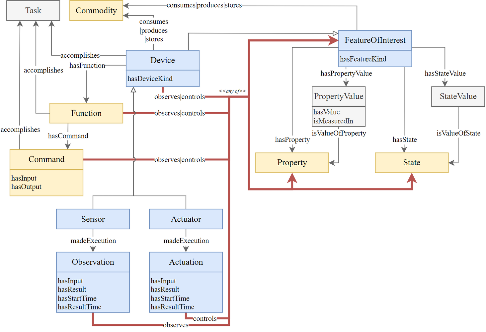
Figure 41: SAREF Core -- An overview of classes and properties
Similarly, Figure 42 illustrates SAREF’s conceptual model for defining generic or prototypical entities, such as device types, feature types, and their associated behaviors and data structures. This abstraction enables the construction of taxonomies, vocabularies, and catalogues that are reusable and interoperable across multiple application domains. At the core, SAREF provides a standardized ontology for expressing generalized kinds, as seen through:
-
DeviceKind: A generic category of devices that can observe or control features, accomplish functions, and interact with commodities. It is not a concrete device, but a template for classes of devices.
-
FeatureKind: Represents generalized features (e.g., temperature, motion) that devices can interact with.
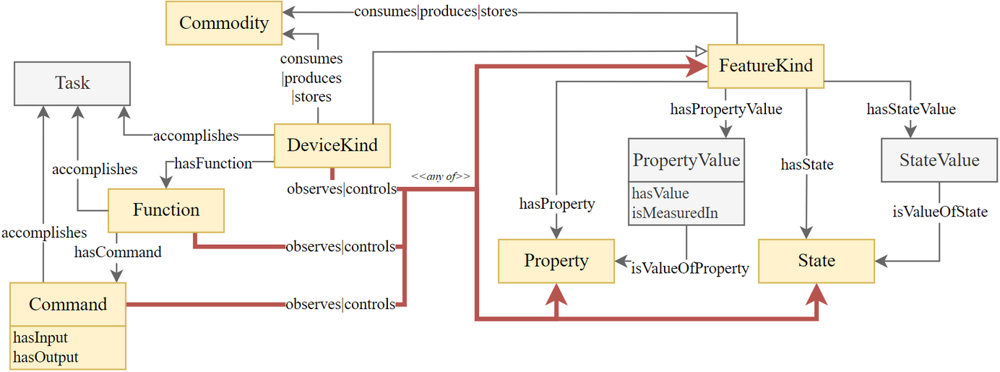
Figure 42: Overview of the classes and properties for generic entities
This conceptual model enables developers and domain experts to define and share standardized templates of devices, features, and behaviors, promoting consistency and reuse. It ensures semantic interoperability across various platforms, systems, and sectors, facilitating seamless integration and communication. Furthermore, it supports the development of domain-independent catalogs that can later be specialized to meet specific application needs.
Relevance to CELINE
As the CELINE project aims at promoting community-based digital energy solutions and cross-sector data integration, it aligns well with SAREF’s role in ensuring semantic interoperability across smart energy systems. By adopting SAREF, CELINE can standardize the representation of devices, functions, and data flows within its Digital Twin and AI tools, enabling consistent, scalable, and interoperable services across its diverse demonstrators. This supports CELINE’s goals of user empowerment, data sovereignty, and seamless stakeholder collaboration.
SAREF4BLDNG
SAREF4BLDNG [151] is an extension of the SAREF (Smart Appliances REFerence) framework developed by ETSI (European Telecommunications Standards Institute), specifically tailored for the building domain. It provides a standardized ontology to support the interoperability of devices and systems within buildings, enabling seamless data exchange and integration across various energy and building management systems. By incorporating SAREF4BLDNG, building owners, operators, and energy managers can ensure that data from different smart devices, sensors, and systems can communicate effectively, facilitating the optimization of energy consumption, maintenance, and overall building performance.
Relevance to CELINE
In the context of CELINE, SAREF4BLDNG plays a crucial role in enabling the integration of digital technologies within community energy systems. As CELINE focuses on fostering community-based and data-driven energy solutions, SAREF4BLDNG’s standardized approach to building data interoperability directly aligns with CELINE's goal of creating a cross-sector, decentralized digital ecosystem. This ontology can be used to ensure that energy systems within buildings, whether residential or commercial, can interact seamlessly with broader community energy management tools, ensuring a smooth exchange of energy data for optimized self-consumption, production, and overall system performance. By leveraging SAREF4BLDNG, CELINE can enhance energy efficiency and user engagement within its demonstrators, ensuring that the data-driven tools are universally interoperable and scalable across various European regions.
SAREF4EHAW
SAREF4EHAW [152] is an extension of the SAREF framework developed by ETSI, designed specifically for the Energy and Health and Wellbeing (EHAW) domain. This ontology facilitates interoperability between devices and systems within both energy management and healthcare contexts. It provides standardized models for devices used in health and wellness environments, ensuring that data can be shared seamlessly across energy and health-related systems. This integration is crucial for optimizing energy consumption and improving overall health and comfort in residential, healthcare, and wellness settings.
Relevance to CELINE
In the context of CELINE, SAREF4EHAW supports the project’s objective of creating community-driven, data-driven energy solutions by incorporating health and energy data. By leveraging this ontology, CELINE can foster more holistic, user-centric services that optimize energy usage while considering health and wellbeing. This integration is particularly valuable for CELINE's goal of empowering users and enhancing their energy literacy, as it allows for smarter energy decisions that balance both energy efficiency and individual comfort, thereby creating sustainable and healthier community-based systems.
SAREF4ENER
The SAREF4ENER [153] extension enables the annotation or creation of a neutral, protocol-independent set of messages that smart appliance manufacturers can either adopt directly or map from their preferred domain-specific protocols. The SAREF4ENER extension. These messages facilitate communication between energy smart appliances and an Energy Management System (EMS), allowing for efficient optimization of energy consumption and production according to user-defined constraints.
The SAREF4ENER is an extension of SAREF ontology that includes a set of saref:Profiles that describe the energy flexibility capabilities of a Device. These profiles are drawn from the SPINE/SPINE IoT and the S2 data model. The SAREF4ENER extension additionally describes flexibility instructions separately from the flexibility profiles.
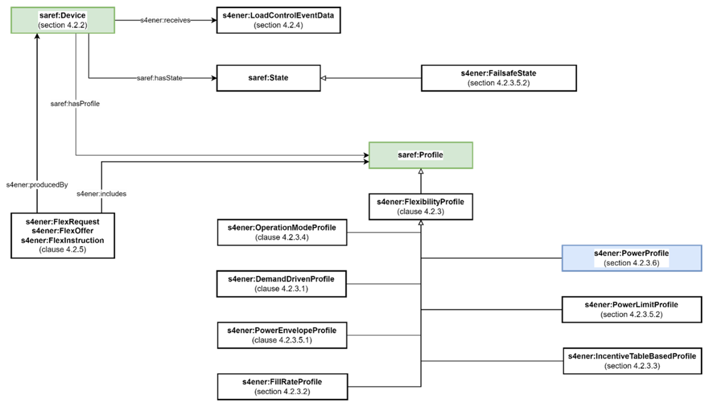
Figure 43: SAREF4ENER extension on saref:Profile. (The green color is used to distinguish SAREF core entities.)
The extensions related to the energy flexibility profiles are the following
-
s4ener:DemandDrivenProfile: for devices that can consume from different sources (e.g. electricity and gas), but do not have a way of buffering/storing that energy.
-
s4ener:FillRateBasedProfile: for devices that can store energy (s4ener:Storage).
-
s4ener:operationModeProfile: for devices that can control the amount power they generate/consuming (e.g. variable electrical resistors).
-
s4ener:IncentiveTableBasedProfile: to describe an incentive table, compiled of incentive table slots (s4ener:IncentiveTableSlot) as well as a power plan (s4ener:PowerPlan). Both are used to negotiate the allocation of upcoming energy usage of a device between the energy manager and the device.
-
s4ener:PowerLimit: general upper-class of power limits
-
s4ener:PowerProfile: to schedule devices in certain modes/times to optimize energy efficiency.
-
s4ener:PowerEnvelopeBasedProfile: for devices that operate within a minimum/maximum amount of power, but the production/consumption cannot be directly regulated by the energy manager (e.g. PV panels).
SARGON (Smart Energy Grid Ontology)
SARGON (SmArt eneRGy dOmain oNtology) [167] is an open-source effort to define semantic descriptions of the smart assets in building automation and the smart grid and the relationships between them.
SARGON consists of an extensible dictionary of terms and concepts in and around building and smart grid, a set of relationships for linking and composing concepts together, and a flexible data model permitting seamless integration of SARGON with existing tools and databases.
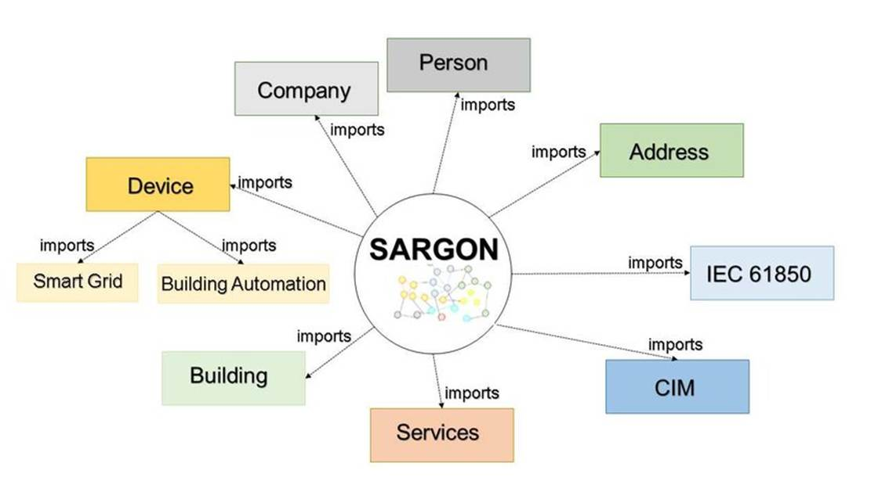
[24]. | Download Scientific Diagram" />Figure 44: Overview of the SARGON ontology.
SEA Knowledge Model and Electrical Power System Ontology
The SEA Knowledge Model (often cited as the SEAS Knowledge Model) [88] was conceived within the ITEA 2 “Smart Energy Aware Systems” project as a web-scale ontology designed to remove semantic barriers along the energy value chain. Its primary objective is to make heterogeneous data (from devices, markets, weather services, or user portals) mutually intelligible, so that smart-grid functions such as monitoring, forecasting, and control can be orchestrated without bespoke adapters. To meet this goal, the authors adopted strict design criteria: every module reuses or aligns to existing standards, exposes rich metadata, and is published under stable, dereferenceable URIs. Modularity and versioning ensure that implementers can load only what they need while still relying on a shared semantic core, thereby keeping reasoning tasks tractable and enabling extension to domains beyond electricity, such as gas or water utilities.
At the heart of the model lie three horizontal ontologies that act as “semantic glue.” seas:FeatureOfInterestOntology supplies a neutral way to talk about any real-world thing that can be observed or acted upon; seas:EvaluationOntology captures the time-stamped values, units and quality indicators associated with those things; and seas:SystemOntology formalises systems, the connections that link them, and the connection-points where exchanges occur. These generic patterns give rise to lightweight axioms such as connectedTo, hasSubSystem or hasProperty, which can be specialised for virtually any cyber-physical infrastructure.
Building on this core, a family of vertical modules tailors the patterns to concrete energy scenarios. The Electric Power System Ontology (EPSO) is a flagship example. It defines ElectricPowerSystem as any system that produces, consumes, stores or exchanges electricity, and then refines this root class into producers, consumers, storage units, distribution networks, transformers and lines. Electric exchanges are mediated through classes such as ElectricalConnection and ElectricalConnectionPoint, detailed further into AlternatingCurrentConnection, DirectCurrentConnection and their corresponding points. Quantities of interest are modelled with fine-grained property classes, i.e., ElectricPowerProperty, ElectricEnergyProperty, CurrentProperty, and VoltageProperty, each paired with evaluation classes that bind numeric values, units and timestamps. By treating power-flow topologies, operational states and metered quantities within a single logical space, EPSO lets applications query, reason and validate grid information in a uniform manner.
The breadth of the SEAS catalogue means the knowledge model extends well beyond wires and watts. Complementary ontologies capture devices, smart meters, batteries, photovoltaic systems, actors and trading arrangements, as well as optimisation and forecasting concepts. This coverage allows use in smart-home automation, district-heating optimisation, electric-vehicle integration, demand-response markets or city-scale energy dashboards, all while relying on the same semantic primitives. Because every module imports the Time ontology, aligns to SOSA/SSN sensor patterns and adopts linked-data best practices, datasets from building-information models, weather services or IoT platforms can be fused without loss of meaning. Consequently, the model has been applied in power-system simulators, flexibility marketplaces, and energy-aware building management, and is recognised in ETSI specifications as a reference pattern for future extensions.
Relevance to CELINE
Against this backdrop, CELINE’s ambition to build an open, cross-sector Digital Twin and AI Toolbox for community energy systems is naturally synergistic with SEAS/EPSO. CELINE needs to ingest device telemetry, user preferences, market prices, and contextual data, then serve intelligible insights back to citizens, cooperatives, and grid operators. Adopting SEAS as its semantic backbone would help CELINE gain access to interoperable vocabularies for modelling household assets, community micro-grids and energy exchanges, while EPSO would offer precise terms for representing power flows, storage states and connection constraints inside the Digital Twin. Because SEAS modules already align with SAREF and SOSA/SSN, CELINE could plug into IoT devices or external data lakes without redefining schemas, uphold data-sovereignty by linking rather than duplicating sources, and still leave room to mint local extensions for social or mobility data. In short, the SEA Knowledge Model provides the semantic scaffolding CELINE requires to turn heterogeneous, community-generated data into coherent, machine-understandable knowledge that fuels its AI assistants and fosters trustworthy, user-centric energy innovations.
SEAS (Smart Energy Aware Systems Ontology)
The Smart Energy Aware Systems (SEAS) [89] ontology was conceived within the ITEA-2 SEAS project to give the energy domain a common semantic backbone that lets heterogeneous actors and software reason over the same facts. At a project level, SEAS set out to “enable energy, ICT and automation systems to collaborate at consumption sites” by making it possible to monitor, estimate, control, and ultimately optimise energy use in dynamic situations such as smart homes, micro-grids, and cities. Achieving that ambition required a formal, machine-processable description of energy systems, their components, and their interactions; the SEAS ontology is that description, offering a vocabulary and logical constraints that any compliant dataset or service can share.
Conceptually, SEAS is built around three tightly linked core modules that reflect recurring modelling patterns found in more than one hundred industrial use-cases gathered during the project. seas:FeatureOfInterestOntology captures anything whose state matters for energy management (e.g., a room, a photovoltaic panel or an entire micro-grid) together with its properties; seas:EvaluationOntology provides a generic way to attach time-stamped values, units, statistical indicators and forecasts to those properties; and seas:SystemOntology represents “virtually isolated systems” (devices, buildings, neighbourhoods, markets) plus the connections and interfaces through which they exchange energy, information or other resources. Surrounding this core are more than thirty vertical extensions (among them ElectricPowerSystemOntology, PhotovoltaicOntology, SmartMeterOntology, FlexibilityOntology and TradingOntology) that specialise the general patterns for equipment, energy carriers, business roles or optimisation tasks. This modular architecture deliberately mirrors software engineering practices: every module can evolve independently, be imported on demand and be aligned with external standards such as SOSA/SSN, SAREF or Brick, ensuring both extensibility and interoperability.
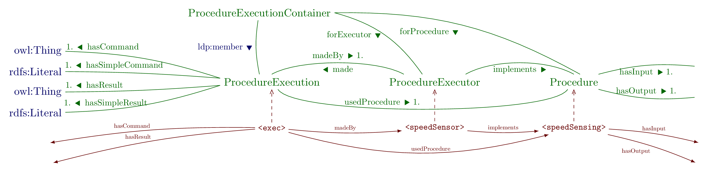
Figure 45: Overview of the SEAS's Procedure Execution ontology [89].
At class level, the ontology centres on a handful of high-level abstractions that can be instantiated across many application domains. A seas:System denotes any entity with a boundary (ranging from a household appliance to a regional transmission network) while a seas:ConnectionPoint marks where two systems interact. A seas:FeatureOfInterest exposes a seas:Property such as electrical power, temperature or state-of-charge; each property may hold one or several seas:Evaluation instances describing its measured, forecast or optimised value. Actors that own, operate or influence systems are modelled through the PlayerOntology, and economic aspects of flexibility, pricing and trading are available via the corresponding modules. These classes collectively cover electrical engineering, building automation, e-mobility, street-lighting and other energy-intensive verticals, allowing SEAS to operate at a higher conceptual level than equipment-oriented schemas while still offering hooks to SAREF or Brick for fine-grained device descriptions.
Because it is domain-agnostic above the “energy” line, SEAS lends itself to a wide spectrum of application domains. In buildings, it provides a consistent schema for fusing sensor data, control commands and thermal models; in distribution networks, it expresses the topology, connection points and flexibility classes needed for congestion management and peer-to-peer trading; in mobility, it represents electric vehicles as systems that exchange power with both the grid and the driver’s itinerary; in smart-city contexts, it links public-lighting assets, weather feeds and power markets under one coherent knowledge-graph. Researchers have already exploited SEAS for tasks as diverse as ontology-based reasoning in smart homes, data fusion for household-level digital twins, and semantic uplift of decentralised datasets. Its explicit alignment files further ease integration with time, location, statistical, and unit ontologies, making it an attractive pivot model for cross-sector data.
Relevance to CELINE
These characteristics map directly onto the ambitions of the CELINE project. CELINE intends to build an open, cross-sector digital ecosystem featuring community energy digital twins, AI assistants, and data-sovereign services spanning Valencia, Lappeenranta, and Alpe Cimbra. Adopting SEAS as the underlying semantic layer would let CELINE describe photovoltaic arrays, batteries, prosumer contracts, comfort targets, and grid services with a vocabulary that is already harmonised with key energy and IoT standards, yet modular enough to be localised for each demonstrator. The ontology’s evaluation pattern can host real-time measurements and AI predictions, its system-connection model can mirror the topology of community micro-grids, and its market-oriented modules can ground the economic logic of self-consumption schemes. By relying on SEAS, CELINE gains immediate interoperability with existing SAREF and SSN assets, accelerates the creation of machine-readable digital twins, and ensures that user-centric services remain portable and scalable long after the project ends, thereby reinforcing CELINE’s goals of data integration, user empowerment, and community-driven energy innovation.
Smart Energy Aware Systems
Smart Energy Aware Systems (SEAS) [89] is a concept focused on creating energy-aware environments that utilize intelligent systems to optimize energy consumption, reduce waste, and improve sustainability. The SEAS framework integrates sensors, data analytics, and real-time decision-making to enhance the efficiency of energy systems, often relying on advanced ontologies for modelling and representing knowledge within the energy domain. Ontologies in SEAS are crucial as they provide structured frameworks that allow systems to understand and interpret data in a consistent, interoperable manner. By standardizing concepts, relationships, and data semantics, ontologies ensure that different energy systems and technologies can communicate seamlessly.
Relevance to CELINE
In the context of CELINE, SEAS and its ontology framework are highly relevant. CELINE's goal of developing an open-source digital ecosystem that integrates energy data from various sources can benefit from SEAS’s ontology-based approach to data management. The standardized, interoperable data model provided by SEAS will help CELINE enable community-based energy solutions that are more adaptable and connected, ensuring smooth integration across various energy systems in different geographic and socio-economic contexts. This would allow for improved collaboration between energy stakeholders, optimize energy management in real-time, and enhance the adoption of digital technologies in localized energy settings, which is a core objective of CELINE.
Furthermore, the integration of SEAS concepts in CELINE’s development of AI-assisted tools for energy decision-making will empower end-users by improving their ability to manage their energy consumption more efficiently and sustainably, in line with the goals of enhancing digital and energy literacy.
Smart Home Ontology (SHO)
The Smart Home Ontology (SHO) [90] is a domain-specific knowledge model that formalises the devices, services, and contextual elements that make up an intelligent domestic environment. Conceived as a specialisation of the W3C Semantic Sensor Network (SSN) ontology, SHO’s primary objective is to provide a machine-interpretable vocabulary that bridges the heterogeneity of household sensors, actuators, and appliances, thereby simplifying integration, reasoning, and simulation tasks in Internet-of-Things (IoT)–based homes. In its original formulation, the ontology was coupled with a semantic sensor-network simulator that demonstrated how a fully annotated smart home can be orchestrated under a master/slave architecture, with the master computer issuing commands and receiving events from subordinate devices via a message queue. By abstracting physical devices into well-typed classes and exposing their capabilities through shared properties, SHO enables automated control strategies that are portable across manufacturers and communication protocols, a prerequisite for large-scale deployment of digital home solutions.
SHO’s information model is intentionally lightweight but expressive. At the top level it distinguishes four complementary sub-ontologies (Device, Function, Environment and Policy/Preference) that cooperate to represent a complete smart-home configuration. The Device branch refines the general SSN concepts of Sensor and Actuator into concrete appliance categories such as Computer, HomeAppliance, LightingDevice, SecurityDevice, and HeatingDevice, each inheriting common properties (location, power state, communication interface) while adding domain-specific attributes (e.g., luminance for lamps or temperature set-point for heaters). The Function branch models the atomic or composite services that devices can realise, “measure ambient light”, “lock front door”, “prepare coffee”, and links them to executable templates that define how multiple atomic functions can be combined into higher-level scenarios. Environment captures static and dynamic aspects of the household context: rooms, spatial relations, occupancy, weather feeds, and resident profiles. Policy/Preference encodes user-defined constraints (comfort thresholds, security levels, energy budgets) and system rules that guide automated reasoning, ensuring that generated plans respect both technical feasibility and occupant comfort.
Because the ontology inherits SSN’s observation pattern, every sensor instance is equipped to publish Observations about a Feature of Interest (e.g., room temperature) that, in turn, are linked to Properties and PropertyValues. Actuators mirror this with Actuations that target a given Feature of Interest and change its State. This dual flow of observations and actuations underpins closed-loop automation and enables rule engines or AI components to infer actions from contextual facts. The modular layering means that developers can extend any branch, adding, for example, new appliance types for emerging IoT gadgets or specialised environmental features for health care, without breaking existing reasoning rules, thus preserving backward compatibility while fostering innovation.
SHO has been applied (and evaluated through simulation) in several smart-home scenarios. In the energy domain, researchers have built knowledge-based energy-management systems that use SHO (or extensions of it) combined with OWL/SWRL rules to schedule appliances, shave peak load, and give occupants personalised feedback on consumption trends. Security use-cases exploit the ontology’s representation of presence sensors, cameras, and door locks to generate context-aware alarms, whereas ambient-assisted-living pilots rely on SHO’s activity and environment modelling to detect anomalies in elderly residents’ daily routines. More exploratory work links SHO semantics to entertainment and comfort services (adaptive lighting scenes, multi-room audio, air-quality optimisation) showcasing the breadth of application domains that benefit from a unified, reasoning-ready data model.
From a systems-engineering standpoint, SHO demonstrates how an ontology can serve simultaneously as a design-time specification (ensuring all stakeholders share a common vocabulary), as a run-time integration layer (facilitating plug-and-play discovery of capabilities), and as a foundation for higher-order analytics (supporting predictive or diagnostic algorithms that require semantically consistent input). Its success also lies in its pragmatic balance between granularity and tractability: by reusing SSN where appropriate and limiting the number of bespoke classes and properties, it achieves broad interoperability without incurring the computational overhead often associated with very rich ontologies.
Relevance to CELINE
CELINE seeks to build an open, cross-sector Digital Twin and AI Toolbox that empowers communities to manage local energy assets, improve digital literacy, and respect data sovereignty across diverse European regions. Embedding SHO (or an aligned subset of its vocabulary) inside CELINE’s Digital Ecosystem would immediately provide a mature semantic backbone for modelling household-level devices, observations and control capabilities. Because SHO is already compatible with SSN and, through that pathway, with SAREF, its adoption would make it easier to merge fine-grained domestic data with higher-level energy-system ontologies that describe community batteries, solar installations or demand-response assets. In practical terms this would let CELINE reason uniformly about how a resident’s heat-pump schedule interacts with neighbourhood-wide flexibility services, enrich the Digital Twin with actionable context, and accelerate the roll-out of personalised AI assistants across the Spanish, Finnish, and Italian demonstrators while preserving interoperability and data sovereignty.
Solar Soft Cost Ontology (SSCO)
The Solar Soft Cost Ontology (SSCO) [154] is created to bring clarity and structure to the often-ambiguous notion of “soft costs” in distributed solar-photovoltaic (PV) projects. Soft costs, everything that is not hardware, such as customer acquisition, permitting, finance, and labour, now represent more than half of the installed price of a typical U.S. residential PV system, yet the literature lacked a common language to describe them consistently. SSCO addresses this gap by capturing the concepts, actors, and knowledge processes that drive non-hardware expenses and by formalising their relationships in Web Ontology Language (OWL). Constructed from a systematic coding of about 130 peer-reviewed articles, the first release (v1.0) contains 136 classes and 87 object or data properties, giving researchers, practitioners, and policymakers a shared semantic backbone for analysing, benchmarking, and ultimately reducing soft costs.
At the heart of SSCO is the class SoftCostComponent, a top-level concept that partitions non-hardware expenditures into six canonical categories widely cited in solar economics: Permitting, Inspection and Interconnection (PII); Customer Acquisition & Marketing; Financing & Contracting; Supply-Chain & Overhead; Installation Labour & Site Design; and Indirect or Miscellaneous Costs. Each category is further refined. For example, PII subdivides into “permit application fees,” “plan review,” “site inspection,” and “utility interconnection studies,” providing the granularity needed for detailed cost-tracking or policy simulation. Complementing these cost elements is the class Actor, which enumerates stakeholders that either bear or influence soft costs (installers, local authorities, financiers, equipment suppliers, customers, trade associations, and others). A parallel branch, KnowledgeAsset, models the data, rules of thumb, standards, and best practices that actors create or exchange, while LearningProcess (e.g., learning-by-doing, learning-by-searching, knowledge spillover) represents the mechanisms through which experience translates into cost reduction. These conceptual triads (components, actors, learning) are linked by properties such as incursCost, reducesCostVia, sharesKnowledgeWith, or governedByRegulation, yielding a graph that can answer questions like “Which municipal policies influence permit-review time and how does that propagate to customer-acquisition cost?”
SSCO’s schema also embeds contextual classes such as PVProject, Location, MarketSegment, and PolicyInstrument so that a particular soft-cost observation can be anchored in time, space, and regulatory setting. This makes the ontology suitable for diverse application domains.
In academic research, it enables meta-analysis of soft-cost studies that previously used incompatible taxonomies; in industry, it underpins cost-benchmarking dashboards or digital twins of installation workflows; in policy, it supports evidence-based design of permitting-streamlining rules or incentive programmes; and in finance, it feeds risk models that separate technical from procedural uncertainty. Several early adopters have already mapped National Renewable Energy Laboratory (NREL) cost-benchmarking spreadsheets and SolarAPP+ permitting datasets to SSCO for richer analytics.
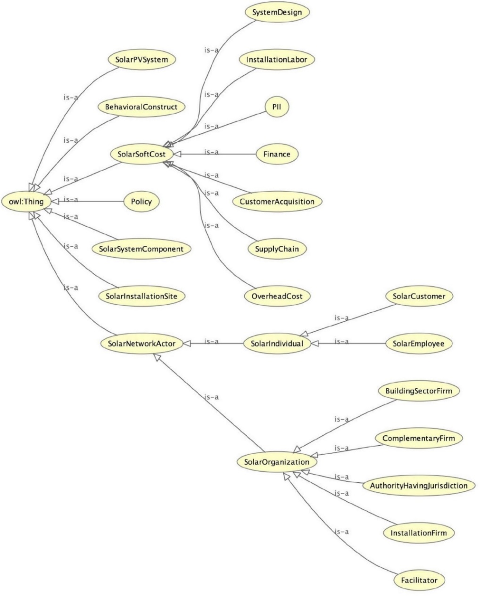
Figure 46: Overview of SSCO classes and interrelationships [154].
Relevance to CELINE
The SSCO is highly relevant to the CELINE project’s ambition to build a cross-sector, data-driven digital ecosystem for community energy systems. CELINE’s Digital Twin and AI Assistant Tools must deal not only with technical performance data (handled elegantly by SAREF) but also with the socio-economic frictions that shape user adoption and project viability. Integrating SSCO alongside SAREF would allow CELINE to represent, query, and reason over non-hardware factors, permitting delays in Valencia, financing hurdles for cooperatives in Alpe Cimbra, or customer-acquisition strategies in Lappeenranta, using a standard vocabulary. In practical terms, SSCO classes could be linked to SAREF’s Device or Function instances via properties like hasAssociatedSoftCost, creating a unified knowledge graph where technical and procedural data coexist. This fusion would help CELINE quantify the full cost-to-serve of its community-led self-consumption schemes, test the impact of digital-literacy interventions on customer-acquisition costs, and benchmark soft-cost trajectories across its three demonstrators. Ultimately, adopting SSCO would strengthen CELINE’s FAIR-data credentials, enhance the portability of its toolbox to new regions, and accelerate the scaling of user-centric energy innovations across Europe.
SSN (Semantic Sensor Network Ontology)
The Semantic Sensor Network (SSN) Ontology [155]-[156] is a W3C/OGC recommendation that provides a common, machine-interpretable vocabulary for representing sensors, actuators, their deployments, and the observations or actuations they perform. Its primary objective is to overcome syntactic and semantic heterogeneity in sensor data by supplying shared classes and properties that can be reused across platforms, domains, and data-sharing initiatives. By describing what is observed or acted on, how the activity is carried out, where it happens, and who or what performs it, SSN enables fine-grained integration, discovery, and reasoning over data streams that would otherwise remain siloed. In practice, this semantic backbone underpins everything from real-time analytics to provenance tracking and automated decision support, all while remaining agnostic to the concrete communication protocols or storage technologies that individual systems might adopt.
SSN achieves this goal through a carefully layered architecture. At its heart lies SOSA, the lightweight Sensor, Observation, Sample, and Actuator core that captures the everyday interactions among sensors, actuators, and their results. SOSA supplies the minimal axioms needed for Linked-Data publication and is intentionally easy to align with existing data models. The full SSN ontology then enriches this core with tighter axiomatization, alignment to upper ontologies, and a suite of vertical modules covering system capabilities, sampling relations, and deployment metadata. This two-tier approach lets data publishers choose the complexity level that best matches their use case while retaining guaranteed interoperability: SOSA for rapid, low-overhead publication, and SSN for knowledge-graph reasoning or advanced quality-of-information assessments.
Within that framework, SSN introduces a concise but expressive set of classes that fall into four conceptual clusters. The Observation–Result cluster captures the act of sensing: sosa:Observation links a sosa:Sensor (the device or algorithm performing the act) to the sosa:ObservableProperty it measures, the sosa:FeatureOfInterest it concerns, and the sosa:Result (or sosa:hasSimpleResult) it produces. A symmetric Actuation pattern mirrors this, connecting an sosa:Actuator to the property it manipulates via sosa:Actuation. The Sampling cluster generalizes both patterns by introducing sosa:Sample and sosa:Sampling, allowing data to be tied explicitly to representative specimens such as water samples or digital subsets. Finally, the System–Deployment cluster models the physical or virtual arrangements in which sensing happens: sosa:Platform hosts one or more ssn:System components, while ssn:Deployment records when and where those systems are installed, their operating ranges, and their inter-subsystem relationships. Additional classes (ssn:Procedure, ssn:Stimulus, ssn:Property, and capability subclasses) round out the ontology by specifying how measurements are performed and what qualities (accuracy, latency, drift) characterize them.
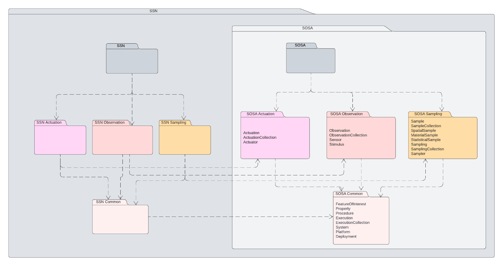
Figure 47: SSN Ontology core packages [155].
SSN’s design deliberately echoes the ISO 19156 Observations & Measurements (O&M) standard and aligns with PROV-O for provenance, which makes it straightforward to combine sensor data with geospatial, statistical, and domain-specific vocabularies. Because every class and property carries an HTTP URI, individual observations can be published as Linked Open Data and immediately linked to complementary knowledge (units in QUDT, locations in GeoSPARQL, time intervals in OWL-Time). The ontology’s openness and extensibility have triggered a broad ecosystem of domain extensions (e.g., for marine science, air-quality monitoring, wearable health devices, and smart manufacturing) without fragmenting its core semantics.
Consequently, the range of application domains supported by SSN/SOSA is remarkably wide. The specification itself highlights use cases that span satellite imagery, large-scale environmental monitoring networks, industrial and household automation, social sensing and citizen-science campaigns, observation-driven ontology engineering, and the emergent Web of Things stack. Whether the data come from Earth-observation satellites, rooftop photovoltaic inverters, mobility trackers in a smart city, or micro-synchrophasors in a power grid, SSN offers a common descriptive layer that software agents and data scientists can exploit for cross-dataset analytics, spatio-temporal reasoning, and federated querying.
Relevance to CELINE
This breadth is highly relevant to the CELINE project, whose ambition is to build a cross-sector digital ecosystem and toolbox (including a Digital Twin of community energy systems and AI assistant tools) for three geographically and socio-economically diverse demonstrators. Each demonstrator will rely on dense, heterogeneous sensor networks: smart meters and rooftop PV in Valencia, building automation and e-mobility chargers in Lappeenranta, micro-hydro plants and biomass boilers in Alpe Cimbra. Adopting SSN/SOSA as the canonical vocabulary for these data streams would give CELINE an immediate path to semantic interoperability across devices, sectors, and regions. SSN’s modular core can describe both electrical measurements (power, voltage, frequency) and contextual observations (indoor comfort, weather, traffic) in a unified way, which is crucial for CELINE’s AI assistants that must reason across energy and non-energy domains. Moreover, SSN’s deployment and capability modules allow CELINE to embed information on device ownership, data-sovereignty constraints, and operational ranges, key requirements for the project’s emphasis on community governance and data sovereignty. By grounding its Digital Twin on SSN, CELINE can expose standard, Linked-Data interfaces that external developers, municipal data portals, and other EU initiatives can consume, thus strengthening replicability and long-term impact beyond the three pilot sites.
ThinkHome Ontology
The ThinkHome ontology [93] is a semantic framework designed to enable intelligent energy management in smart homes. Its main goal is to provide a knowledge base that integrates various aspects of a smart home, such as devices, user behaviour, energy efficiency goals, and environmental conditions, within a formalized, machine-understandable structure.
Figure 48 depicts an overview of ThinkHome. The Knowledge Base is accessed by AI based Control Agents in a Multi-Agent System to achieve the Global Goals set by the inhabitants.
ThinkHome is part of a broader smart home automation system that uses semantic technologies to enhance automation, energy optimization, and user comfort. The ontology serves as a central component in the intelligent control system, enabling reasoning over heterogeneous data and supporting decision-making. The data is divided into static data and dynamic data. Static data refers to information that is not likely to change frequently, e.g., energy policies or user preferences. Dynamic data describes the current state of the building and its inhabitants. The data is stored in the Web Ontology Language (OWL).
The knowledge base is split into categories as depicted in Figure 49. Information emanating from these categories can be combined, e.g., Thermal characteristics of the building together with information about Weather and Climate can be used to increase the energy efficiency.
This ontology allows for a smart home to access and process data of different categories to maximize energy efficiency. The modular design ensures extensibility and reusability. By using standard ontological frameworks (e.g., OWL), ThinkHome supports interoperability across different smart home systems and devices.
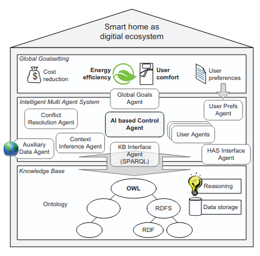
Figure 48: ThinkHome overview of System Components [93].
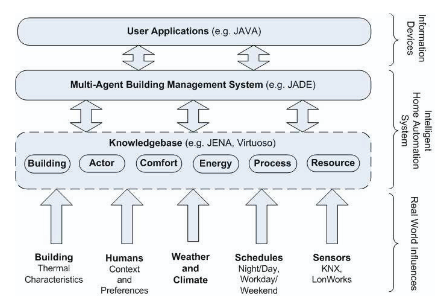
Figure 49: Top level concepts of the Knowledge Base [93].